Core Documentation
About
Filament is a real-time physically based rendering engine for Android, iOS, Linux, macOS, Windows, and WebGL. It is designed to be as small as possible and as efficient as possible on Android.
This book contains demos, tutorials, and links to important reference materials for developing software with Filament.
In addition to the contents in this book, the following external resources are also available.
-
Contains build instructions, instructions for contributors, etc.
-
A visual guide that demonstrates the effects of tweaking various PBR parameters.
To report errors in this book, please refer to the Filament project's issue tracker.
Authors
Filament Design
The Filament Design doc gives a high level overview of the PBR rendering techniques used in Filament.
Overview
Filament is a physically based rendering (PBR) engine for Android. Filament offers a customizable material system that you can use to create both simple and complex materials. This document describes all the features available to materials and how to create your own material.
Core concepts
Material : A material defines the visual appearance of a surface. To completely describe and render a surface, a material provides the following information: - Material model - Set of use-controllable named parameters - Raster state (blending mode, backface culling, etc.) - Vertex shader code - Fragment shader code
Material model : Also called shading model or lighting model, the material model defines the intrinsic properties of a surface. These properties have a direct influence on the way lighting is computed and therefore on the appearance of a surface.
Material definition : A text file that describes all the information required by a material. This is the file that you will directly author to create new materials.
Material package
: At runtime, materials are loaded from material packages compiled from
material definitions using the matc tool. A material package contains all
the information required to describe a material, and shaders generated for
the target runtime platforms. This is necessary because different platforms
(Android, macOS, Linux, etc.) use different graphics APIs or different
variants of similar graphics APIs (OpenGL vs OpenGL ES for instance).
Material instance : A material instance is a reference to a material and a set of values for the different values of that material. Material instances are not covered in this document as they are created and manipulated directly from code using Filament's APIs.
Material models
Filament materials can use one of the following material models: - Lit (or standard) - Subsurface - Cloth - Unlit - Specular glossiness (legacy)
Lit model
The lit model is Filament's standard material model. This physically-based shading model was designed after to offer good interoperability with other common tools and engines such as Unity 5, Unreal Engine 4, Substance Designer or Marmoset Toolbag.
This material model can be used to describe many non-metallic surfaces (dielectrics) or metallic surfaces (conductors).
The appearance of a material using the standard model is controlled using the properties described in table [standardProperties].
| Property | Definition |
|---|---|
| baseColor | Diffuse albedo for non-metallic surfaces, and specular color for metallic surfaces |
| metallic | Whether a surface appears to be dielectric (0.0) or conductor (1.0). Often used as a binary value (0 or 1) |
| roughness | Perceived smoothness (1.0) or roughness (0.0) of a surface. Smooth surfaces exhibit sharp reflections |
| reflectance | Fresnel reflectance at normal incidence for dielectric surfaces. This directly controls the strength of the reflections |
| sheenColor | Strength of the sheen layer |
| sheenRoughness | Perceived smoothness or roughness of the sheen layer |
| clearCoat | Strength of the clear coat layer |
| clearCoatRoughness | Perceived smoothness or roughness of the clear coat layer |
| anisotropy | Amount of anisotropy in either the tangent or bitangent direction |
| anisotropyDirection | Local surface direction in tangent space |
| ambientOcclusion | Defines how much of the ambient light is accessible to a surface point. It is a per-pixel shadowing factor between 0.0 and 1.0 |
| normal | A detail normal used to perturb the surface using bump mapping (normal mapping) |
| bentNormal | A normal pointing in the average unoccluded direction. Can be used to improve indirect lighting quality |
| clearCoatNormal | A detail normal used to perturb the clear coat layer using bump mapping (normal mapping) |
| emissive | Additional diffuse albedo to simulate emissive surfaces (such as neons, etc.) This property is mostly useful in an HDR pipeline with a bloom pass |
| postLightingColor | Additional color that can be blended with the result of the lighting computations. See postLightingBlending |
| ior | Index of refraction, either for refractive objects or as an alternative to reflectance |
| transmission | Defines how much of the diffuse light of a dielectric is transmitted through the object, in other words this defines how transparent an object is |
| absorption | Absorption factor for refractive objects |
| microThickness | Thickness of the thin layer of refractive objects |
| thickness | Thickness of the solid volume of refractive objects |
[Table [standardProperties]: Properties of the standard model]
The type and range of each property is described in table [standardPropertiesTypes].
| Property | Type | Range | Note |
|---|---|---|---|
| baseColor | float4 | [0..1] | Pre-multiplied linear RGB |
| metallic | float | [0..1] | Should be 0 or 1 |
| roughness | float | [0..1] | |
| reflectance | float | [0..1] | Prefer values > 0.35 |
| sheenColor | float3 | [0..1] | Linear RGB |
| sheenRoughness | float | [0..1] | |
| clearCoat | float | [0..1] | Should be 0 or 1 |
| clearCoatRoughness | float | [0..1] | |
| anisotropy | float | [-1..1] | Anisotropy is in the tangent direction when this value is positive |
| anisotropyDirection | float3 | [0..1] | Linear RGB, encodes a direction vector in tangent space |
| ambientOcclusion | float | [0..1] | |
| normal | float3 | [0..1] | Linear RGB, encodes a direction vector in tangent space |
| bentNormal | float3 | [0..1] | Linear RGB, encodes a direction vector in tangent space |
| clearCoatNormal | float3 | [0..1] | Linear RGB, encodes a direction vector in tangent space |
| emissive | float4 | rgb=[0..n], a=[0..1] | Linear RGB intensity in nits, alpha encodes the exposure weight |
| postLightingColor | float4 | [0..1] | Pre-multiplied linear RGB |
| ior | float | [1..n] | Optional, usually deduced from the reflectance |
| transmission | float | [0..1] | |
| absorption | float3 | [0..n] | |
| microThickness | float | [0..n] | |
| thickness | float | [0..n] |
[Table [standardPropertiesTypes]: Range and type of the standard model's properties]
!!! Note: About linear RGB Several material model properties expect RGB colors. Filament materials use RGB colors in linear space and you must take proper care of supplying colors in that space. See the Linear colors section for more information.
!!! Note: About pre-multiplied RGB Filament materials expect colors to use pre-multiplied alpha. See the Pre-multiplied alpha section for more information.
!!! Note: About absorption The light attenuation through the material is
defined as \(e^{-absorption \cdot distance}\), and the distance depends on the
thickness parameter. If thickness is not provided, then the absorption
parameter is used directly and the light attenuation through the material
becomes \(1 - absorption\). To obtain a certain color at a desired distance, the
above equation can be inverted such as $absorption =
-\frac{ln(color)}{distance}$.
!!! Note: About ior and reflectance The index of refraction (IOR) and the
reflectance represent the same physical attribute, therefore they don't need to
be both specified. Typically, only the reflectance is specified, and the IOR is
deduced automatically. When only the IOR is specified, the reflectance is then
deduced automatically. It is possible to specify both, in which case their
values are kept as-is, which can lead to physically impossible materials,
however, this might be desirable for artistic reasons.
!!! Note: About thickness and microThickness for refraction thickness
represents the thickness of solid objects in the direction of the normal, for
satisfactory results, this should be provided per fragment (e.g.: as a texture)
or at least per vertex. microThickness represent the thickness of the thin
layer of an object, and can generally be provided as a constant value. For
example, a 1mm thin hollow sphere of radius 1m, would have a thickness of 1
and a microThickness of 0.001. Currently thickness is not used when
refractionType is set to thin.
Base color
The baseColor property defines the perceived color of an object (sometimes
called albedo). The effect of baseColor depends on the nature of the surface,
controlled by the metallic property explained in the Metallic section.
Non-metals (dielectrics) : Defines the diffuse color of the surface. Real-world values are typically found in the range \([10..240]\) if the value is encoded between 0 and 255, or in the range \([0.04..0.94]\) between 0 and 1. Several examples of base colors for non-metallic surfaces can be found in table [baseColorsDielectrics].
| Metal | sRGB | Hexadecimal | Color |
|---|---|---|---|
| Coal | 0.19, 0.19, 0.19 | #323232 | |
| Rubber | 0.21, 0.21, 0.21 | #353535 | |
| Mud | 0.33, 0.24, 0.19 | #553d31 | |
| Wood | 0.53, 0.36, 0.24 | #875c3c | |
| Vegetation | 0.48, 0.51, 0.31 | #7b824e | |
| Brick | 0.58, 0.49, 0.46 | #947d75 | |
| Sand | 0.69, 0.66, 0.52 | #b1a884 | |
| Concrete | 0.75, 0.75, 0.73 | #c0bfbb |
[Table [baseColorsDielectrics]: baseColor for common non-metals]
Metals (conductors) : Defines the specular color of the surface. Real-world values are typically found in the range \([170..255]\) if the value is encoded between 0 and 255, or in the range \([0.66..1.0]\) between 0 and 1. Several examples of base colors for metallic surfaces can be found in table [baseColorsConductors].
| Metal | sRGB | Hexadecimal | Color |
|---|---|---|---|
| Silver | 0.97, 0.96, 0.91 | #f7f4e8 | |
| Aluminum | 0.91, 0.92, 0.92 | #e8eaea | |
| Titanium | 0.76, 0.73, 0.69 | #c1baaf | |
| Iron | 0.77, 0.78, 0.78 | #c4c6c6 | |
| Platinum | 0.83, 0.81, 0.78 | #d3cec6 | |
| Gold | 1.00, 0.85, 0.57 | #ffd891 | |
| Brass | 0.98, 0.90, 0.59 | #f9e596 | |
| Copper | 0.97, 0.74, 0.62 | #f7bc9e |
[Table [baseColorsConductors]: baseColor for common metals]
Metallic
The metallic property defines whether the surface is a metallic (conductor)
or a non-metallic (dielectric) surface. This property should be used as a
binary value, set to either 0 or 1. Intermediate values are only truly useful to
create transitions between different types of surfaces when using textures.
This property can dramatically change the appearance of a surface. Non-metallic
surfaces have chromatic diffuse reflection and achromatic specular reflection
(reflected light does not change color). Metallic surfaces do not have any
diffuse reflection and chromatic specular reflection (reflected light takes on
the color of the surfaced as defined by baseColor).
The effect of metallic is shown in figure
[metallicProperty](click on the image to see a larger version).
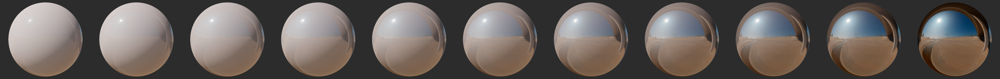
Roughness
The roughness property controls the perceived smoothness of the surface. When
roughness is set to 0, the surface is perfectly smooth and highly glossy. The
rougher a surface is, the "blurrier" the reflections are. This property is often
called glossiness in other engines and tools, and is simply the opposite of
the roughness (roughness = 1 - glossiness).
Non-metals
The effect of roughness on non-metallic surfaces is shown in figure
[roughnessProperty](click on the image to see a larger version).
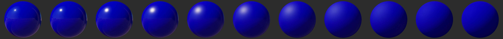
Metals
The effect of roughness on metallic surfaces is shown in figure
[roughnessConductorProperty](click on the image to see a larger version).
![Figure [roughnessConductorProperty]: Conductor roughness varying from 0.0 (left) to 1.0 (right)](images/materials/conductor_roughness.png)
Refraction
When refraction through an object is enabled (using a refractonType of thin
or solid), the roughness property will also affect the refractions, as shown
in figure
[roughnessRefractionProperty](click on the image to see a larger version).
![Figure [roughnessRefractionProperty]: Refractive sphere with roughness varying from 0.0 (left) to 1.0 (right)](images/materials/refraction_roughness.png)
Reflectance
The reflectance property only affects non-metallic surfaces. This property can
be used to control the specular intensity and index of refraction of materials.
This value is defined between 0 and 1 and represents a remapping of a percentage
of reflectance. For instance, the default value of 0.5 corresponds to a
reflectance of 4%. Values below 0.35 (2% reflectance) should be avoided as no
real-world materials have such low reflectance.
The effect of reflectance on non-metallic surfaces is shown in figure
[reflectanceProperty](click on the image to see a larger version).
![Figure [reflectanceProperty]: reflectance varying from 0.0 (left) to 1.0 (right)](images/materials/reflectance.png)
Figure [reflectance] shows common values and how they relate to the mapping function.
![Figure [reflectance]: Common reflectance values](images/diagram_reflectance.png)
Table [commonMatReflectance] describes acceptable reflectance values for various types of materials (no real world material has a value under 2%).
| Material | Reflectance | IOR | Linear value |
|---|---|---|---|
| Water | 2% | 1.33 | 0.35 |
| Fabric | 4% to 5.6% | 1.5 to 1.62 | 0.5 to 0.59 |
| Common liquids | 2% to 4% | 1.33 to 1.5 | 0.35 to 0.5 |
| Common gemstones | 5% to 16% | 1.58 to 2.33 | 0.56 to 1.0 |
| Plastics, glass | 4% to 5% | 1.5 to 1.58 | 0.5 to 0.56 |
| Other dielectric materials | 2% to 5% | 1.33 to 1.58 | 0.35 to 0.56 |
| Eyes | 2.5% | 1.38 | 0.39 |
| Skin | 2.8% | 1.4 | 0.42 |
| Hair | 4.6% | 1.55 | 0.54 |
| Teeth | 5.8% | 1.63 | 0.6 |
| Default value | 4% | 1.5 | 0.5 |
[Table [commonMatReflectance]: Reflectance of common materials]
Note that the reflectance property also defines the index of refraction of the
surface. When this property is defined it is not necessary to define the ior
property. Setting either of these properties will automatically compute the
other property. It is possible to specify both, in which case their values are
kept as-is, which can lead to physically impossible materials, however, this
might be desirable for artistic reasons.
The reflectance property is designed as a normalized property in the range
0..1 which makes it easy to define from a texture.
See section [Index of refraction] for more information about the ior property
and refractive indices.
Sheen color
The sheen color controls the color appearance and strength of an optional sheen layer on top of the base layer described by the properties above. The sheen layer always sits below the clear coat layer if such a layer is present.
The sheen layer can be used to represent cloth and fabric materials. Please refer to section [Cloth model] for more information about cloth and fabric materials.
The effect of sheenColor is shown in figure
[materialSheenColor](click on the image to see a larger version).
!!! Note If you do not need the other properties offered by the standard lit material model but want to create a cloth-like or fabric-like appearance, it is more efficient to use the dedicated cloth model described in section [Cloth model].
Sheen roughness
The sheenRoughness property is similar to the roughness property but applies
only to the sheen layer.
The effect of sheenRoughness on a rough metal is shown in figure
[sheenRoughnessProperty](click on the image to see a larger version). In this
picture, the base layer is a dark blue, with metallic set to 0.0 and
roughness set to 1.0.
![Figure [sheenRoughnessProperty]: sheenRoughness varying from 0.0 (left) to 1.0 (right)](images/materials/sheen_roughness.png)
Clear coat
Multi-layer materials are fairly common, particularly materials with a thin translucent layer over a base layer. Real world examples of such materials include car paints, soda cans, lacquered wood and acrylic.
The clearCoat property can be used to describe materials with two layers. The
clear coat layer will always be isotropic and dielectric.
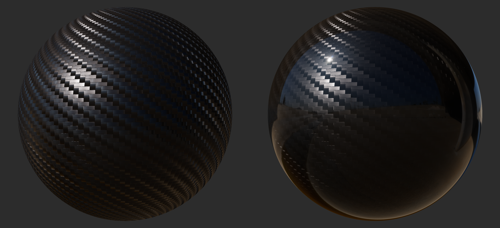
The clearCoat property controls the strength of the clear coat layer. This
should be treated as a binary value, set to either 0 or 1. Intermediate values
are useful to control transitions between parts of the surface that have a clear
coat layers and parts that don't.
The effect of clearCoat on a rough metal is shown in figure
[clearCoatProperty](click on the image to see a larger version).
![Figure [clearCoatProperty]: clearCoat varying from 0.0 (left) to 1.0 (right)](images/materials/clear_coat.png)
!!! Warning The clear coat layer effectively doubles the cost of specular computations. Do not assign a value, even 0.0, to the clear coat property if you don't need this second layer.
!!! Note The clear coat layer is added on top of the sheen layer if present.
Clear coat roughness
The clearCoatRoughness property is similar to the roughness property but
applies only to the clear coat layer.
The effect of clearCoatRoughness on a rough metal is shown in figure
[clearCoatRoughnessProperty](click on the image to see a larger version).
![Figure [clearCoatRoughnessProperty]: clearCoatRoughness varying from 0.0 (left) to 1.0 (right)](images/materials/clear_coat_roughness.png)
Anisotropy
Many real-world materials, such as brushed metal, can only be replicated using
an anisotropic reflectance model. A material can be changed from the default
isotropic model to an anisotropic model by using the anisotropy property.
![Figure [anisotropic]: Comparison of isotropic material (left) and anistropic material (right)](images/material_anisotropic.png)
The effect of anisotropy on a rough metal is shown in figure
[anisotropyProperty](click on the image to see a larger version).
![Figure [anisotropyProperty]: anisotropy varying from 0.0 (left) to 1.0 (right)](images/materials/anisotropy.png)
The figure [anisotropyDir] below shows how the direction of the anisotropic highlights can be controlled by using either positive or negative values: positive values define anisotropy in the tangent direction and negative values in the bitangent direction.
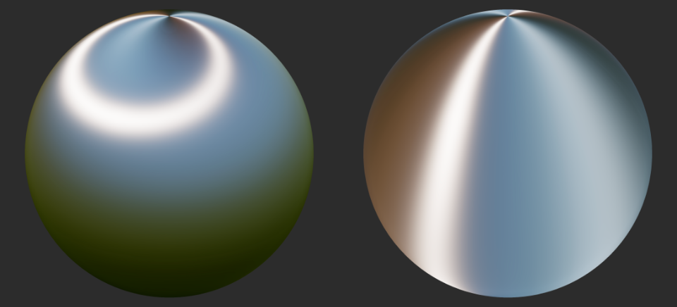
!!! Tip The anisotropic material model is slightly more expensive than the
standard material model. Do not assign a value (even 0.0) to the anisotropy
property if you don't need anisotropy.
Anisotropy direction
The anisotropyDirection property defines the direction of the surface at a
given point and thus control the shape of the specular highlights. It is
specified as vector of 3 values that usually come from a texture, encoding the
directions local to the surface in tangent space. Because the direction is in
tangent space, the Z component should be set to 0.
The effect of anisotropyDirection on a metal is shown in figure
[anisotropyDirectionProperty](click on the image to see a larger version).
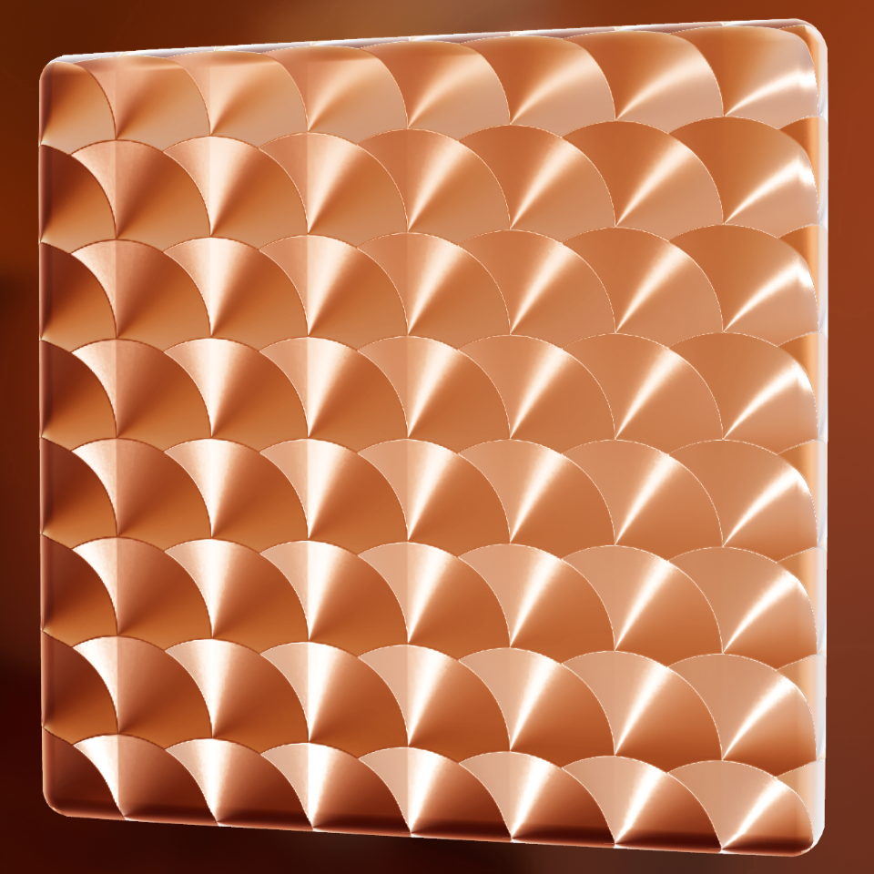
The result shown in figure [anisotropyDirectionProperty] was obtained using the direction map shown in figure [anisotropyDirectionProperty].
![Figure [anisotropyDirectionProperty]: Example of Lighting: specularAmbientOcclusiona direction map](images/screenshot_anisotropy_map.jpg)
Ambient occlusion
The ambientOcclusion property defines how much of the ambient light is
accessible to a surface point. It is a per-pixel shadowing factor between 0.0
(fully shadowed) and 1.0 (fully lit). This property only affects diffuse
indirect lighting (image-based lighting), not direct lights such as directional,
point and spot lights, nor specular lighting.
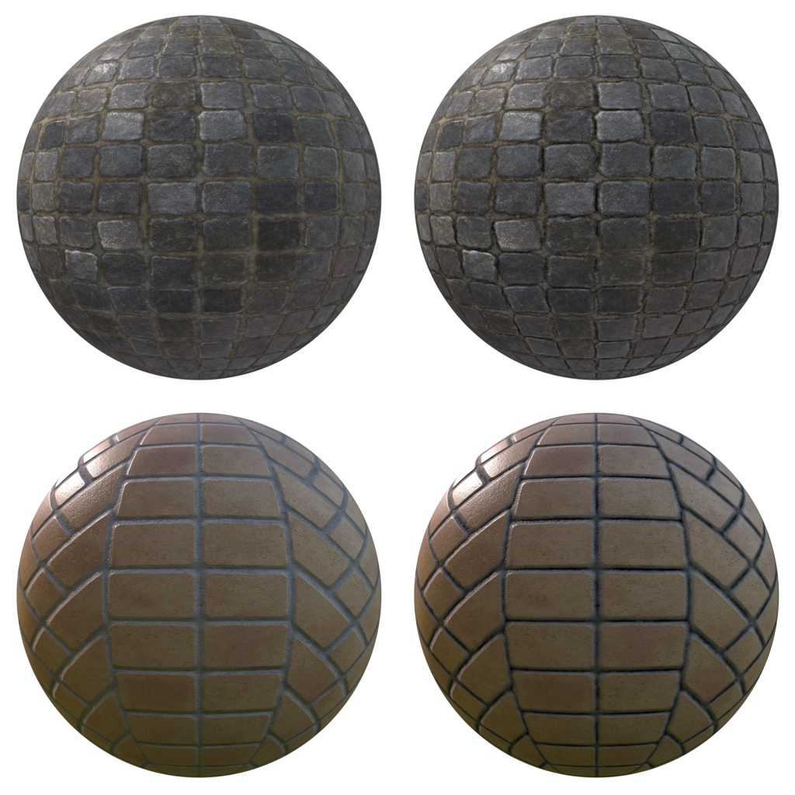
Normal
The normal property defines the normal of the surface at a given point. It
usually comes from a normal map texture, which allows to vary the property
per-pixel. The normal is supplied in tangent space, which means that +Z points
outside of the surface.
For example, let's imagine that we want to render a piece of furniture covered in tufted leather. Modeling the geometry to accurately represent the tufted pattern would require too many triangles so we instead bake a high-poly mesh into a normal map. Once the base map is applied to a simplified mesh, we get the result in figure [normalMapped].
Note that the normal property affects the base layer and not the clear coat
layer.
![Figure [normalMapped]: Low-poly mesh without normal mapping (left) and with (right)](images/screenshot_normal_mapping.jpg)
!!! Warning Using a normal map increases the runtime cost of the material model.
Bent normal
The bentNormal property defines the average unoccluded direction at a point on
the surface. It is used to improve the accuracy of indirect lighting. Bent
normals can also improve the quality of specular ambient occlusion (see section
[Lighting: specularAmbientOcclusion] about specularAmbientOcclusion).
Bent normals can greatly increase the visual fidelity of an asset with various cavities and concave areas, as shown in figure [bentNormalMapped]. See the areas of the ears, nostrils and eyes for instance.
![Figure [bentNormalMapped]: Example of a model rendered with and without a bent normal map. Both versions use the same ambient occlusion map.](images/material_bent_normal.gif)
Clear coat normal
The clearCoatNormal property defines the normal of the clear coat layer at a
given point. It behaves otherwise like the normal property.
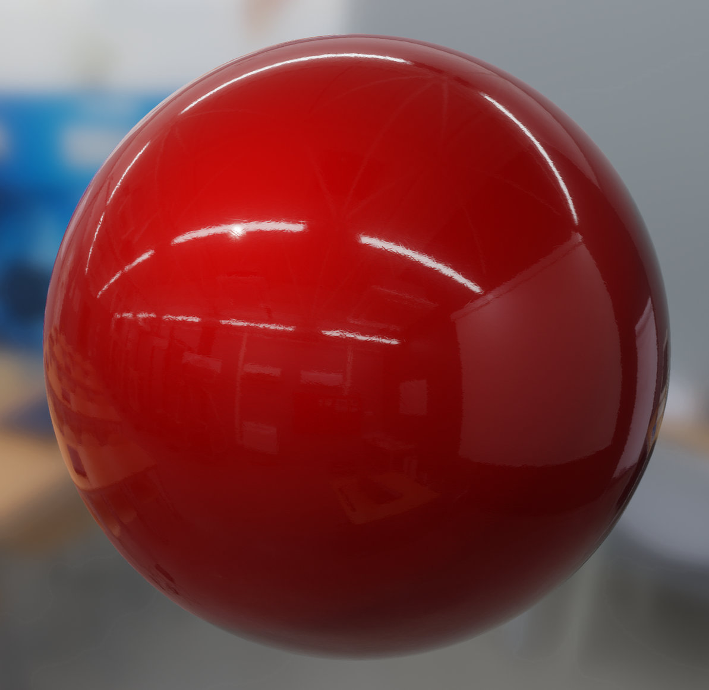
!!! Warning Using a clear coat normal map increases the runtime cost of the material model.
Emissive
The emissive property can be used to simulate additional light emitted by the
surface. It is defined as a float4 value that contains an RGB intensity in
nits as well as an exposure weight (in the alpha channel).
The intensity in nits allows an emissive surface to function as a light and can be used to recreate real world surfaces. For instance a computer display has an intensity between 200 and 1,000 nits.
If you prefer to work in EV (or f-stops), you can simplify multiply your
emissive color by the output of the API filament::Exposure::luminance(ev).
This API returns the luminance in nits of the specific EV. You can perform this
conversion yourself using the following formula, where \(L\) is the final
intensity in nits: \( L = 2^{EV - 3} \).
The exposure weight carried in the alpha channel can be used to undo the camera exposure, and thus force an emissive surface to bloom. When the exposure weight is set to 0, the emissive intensity is not affected by the camera exposure. When the weight is set to 1, the intensity is multiplied by the camera exposure like with any regular light.
Post-lighting color
The postLightingColor can be used to modify the surface color after lighting
computations. This property has no physical meaning and only exists to implement
specific effects or to help with debugging. This property is defined as a
float4 value containing a pre-multiplied RGB color in linear space.
The post-lighting color is blended with the result of lighting according to the
blending mode specified by the postLightingBlending material option. Please
refer to the documentation of this option for more information.
!!! Tip postLightingColor can be used as a simpler emissive property by
setting postLightingBlending to add and by providing an RGB color with alpha
set to 0.0.
Index of refraction
The ior property only affects non-metallic surfaces. This property can be used
to control the index of refraction and the specular intensity of materials. The
ior property is intended to be used with refractive (transmissive) materials,
which are enabled when the refractionMode is set to cubemap or
screenspace. It can also be used on non-refractive objects as an alternative
to setting the reflectance.
The index of refraction (or refractive index) of a material is a dimensionless number that describes how fast light travels through that material. The higher the number, the slower light travels through the medium. More importantly for rendering materials, the refractive index determines how the path light travels is bent when entering the material. Higher indices of refraction will cause light to bend further away from the initial path.
Table [commonMatIOR] describes acceptable refractive indices for various types of materials.
| Material | IOR |
|---|---|
| Air | 1.0 |
| Water | 1.33 |
| Common liquids | 1.33 to 1.5 |
| Common gemstones | 1.58 to 2.33 |
| Plastics, glass | 1.5 to 1.58 |
| Other dielectric materials | 1.33 to 1.58 |
[Table [commonMatIOR]: Index of refraction of common materials]
The appearance of a refractive material will greatly depend on the
refractionType and refractionMode settings of the material. Refer to section
[Blending and transparency: refractionType] and section [Blending and
transparency: refractionMode] for more information.
The effect of ior when refractionMode is set to cubemap and
refractionType is set to solid can be seen in figure
[iorProperty2](click on the image to see a larger version).
![Figure [iorProperty2]: transmission varying from 1.0 (left) to 1.5 (right)](images/materials/ior.png)
Figure [iorProperty] shows the comparison of a sphere of ior 1.0 with a sphere
of ior 1.33, with the refractionMode set to screenspace and the
refractionType set to solid (click on the image to see a larger version).
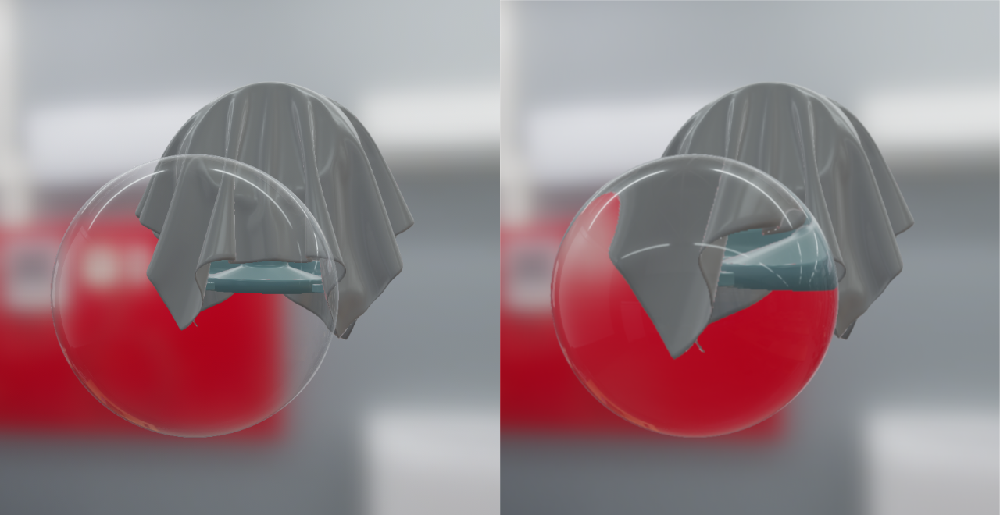
Note that the ior property also defines the reflectance (or specular
intensity) of the surface. When this property is defined it is not necessary to
define the reflectance property. Setting either of these properties will
automatically compute the other property. It is possible to specify both, in
which case their values are kept as-is, which can lead to physically impossible
materials, however, this might be desirable for artistic reasons.
See the Reflectance section for more information on the reflectance property.
!!! Tip Refractive materials are affected by the roughness property. Rough
materials will scatter light, creating a diffusion effect useful to recreate
"blurry" appearances such as frosted glass, certain plastics, etc.
Transmission
The transmission property defines what ratio of diffuse light is transmitted
through a refractive material. This property only affects materials with a
refractionMode set to cubemap or screenspace.
When transmission is set to 0, no amount of light is transmitted and the
diffuse component of the surface is 100% visible. When transmission is set to
1, all the light is transmitted and the diffuse component is not visible
anymore, only the specular component is.
The effect of transmission on a glossy dielectric (ior of 1.5,
refractionMode set to cubemap, refractionType set to solid) is shown in
figure [transmissionProperty](click on the image to see a larger version).
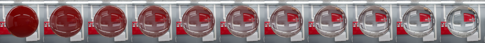
!!! Tip The transmission property is useful to create decals, paint, etc. at
the surface of refractive materials.
Absorption
The absorption property defines the absorption coefficients of light
transmitted through the material. Figure [absorptionExample] shows the effect of
absorption on a refracting object with an index of refraction of 1.5 and a
base color set to white.
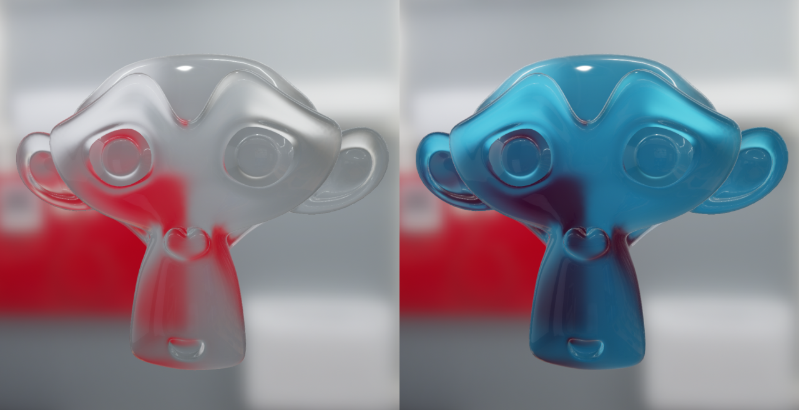
Transmittance through a volume is exponential with respect to the optical depth
(defined either with microThickness or thickness). The computed color
follows the following formula:
$$color \cdot e^{-absorption \cdot distance}$$
Where distance is either microThickness or thickness, that is the distance
light will travel through the material at a given point. If no
thickness/distance is specified, the computed color follows this formula
instead:
$$color \cdot (1 - absorption)$$
The effect of varying the absorption coefficients is shown in figure
[absorptionProperty](click on the image to see a larger version). In this
picture, the object has a fixed thickness of 4.5 and an index of refraction
set to 1.3.
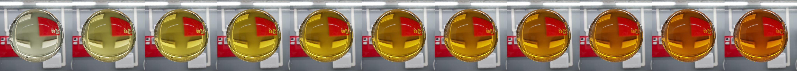
Setting the absorption coefficients directly can be unintuitive which is why we
recommend working with a transmittance color and a "at distance" factor
instead. These two parameters allow an artist to specify the precise color the
material should have at a specified distance through the volume. The value to
pass to absorption can be computed this way:
$$absorption = -\frac{ln(transmittanceColor)}{atDistance}$$
While this computation can be done in the material itself we recommend doing it
offline whenever possible. Filament provides an API for this purpose,
Color::absorptionAtDistance().
Micro-thickness and thickness
The microThickness and thickness properties define the optical depth of the
material of a refracting object. microThickness is used when refractionType
is set to thin, and thickness is used when refractionType is set to
volume.
thickness represents the thickness of solid objects in the direction of the
normal, for satisfactory results, this should be provided per fragment (e.g.: as
a texture) or at least per vertex.
microThickness represent the thickness of the thin layer (shell) of an object,
and can generally be provided as a constant value. For example, a 1mm thin
hollow sphere of radius 1m, would have a thickness of 1 and a microThickness
of 0.001. Currently thickness is not used when refractionType is set to
thin. Both properties are made available for possible future use.
Both thickness and microThickness are used to compute the transmitted color
of the material when the absorption property is set. In solid volumes,
thickness will also affect how light rays are refracted.
The effect thickness in a solid volume with refractionMode set to
screenSpace is shown in figure
[thicknessProperty](click on the image to see a larger version). Note how the
thickness value not only changes the effect of absorption but also modifies
the direction of the refracted light.
![Figure [thicknessProperty]: thickness varying from 0.0 (left) to 2.0 (right)](images/materials/thickness.png)
Figure [varyingThickness] shows what a prism with spatially varying thickness
looks like when the refractionType is set to solid and absorption
coefficients are set.
![Figure [varyingThickness]: thickness varying from 0.0 at the top of the prism to 3.0 at the bottom of the prism](images/material_thickness.png)
Subsurface model
Thickness
Subsurface color
Subsurface power
Cloth model
All the material models described previously are designed to simulate dense surfaces, both at a macro and at a micro level. Clothes and fabrics are however often made of loosely connected threads that absorb and scatter incident light. When compared to hard surfaces, cloth is characterized by a softer specular lob with a large falloff and the presence of fuzz lighting, caused by forward/backward scattering. Some fabrics also exhibit two-tone specular colors (velvets for instance).
Figure [materialCloth] shows how the standard material model fails to capture the appearance of a sample of denim fabric. The surface appears rigid (almost plastic-like), more similar to a tarp than a piece of clothing. This figure also shows how important the softer specular lobe caused by absorption and scattering is to the faithful recreation of the fabric.
![Figure [materialCloth]: Comparison of denim fabric rendered using the standard model (left) and the cloth model (right)](images/screenshot_cloth.png)
Velvet is an interesting use case for a cloth material model. As shown in figure [materialVelvet] this type of fabric exhibits strong rim lighting due to forward and backward scattering. These scattering events are caused by fibers standing straight at the surface of the fabric. When the incident light comes from the direction opposite to the view direction, the fibers will forward scatter the light. Similarly, when the incident light from the same direction as the view direction, the fibers will scatter the light backward.
![Figure [materialVelvet]: Velvet fabric showcasing forward and backward scattering](images/screenshot_cloth_velvet.png)
It is important to note that there are types of fabrics that are still best modeled by hard surface material models. For instance, leather, silk and satin can be recreated using the standard or anisotropic material models.
The cloth material model encompasses all the parameters previously defined for the standard material mode except for metallic and reflectance. Two extra parameters described in table [clothProperties] are also available.
| Parameter | Definition |
|---|---|
| sheenColor | Specular tint to create two-tone specular fabrics (defaults to \(\sqrt{baseColor}\)) |
| subsurfaceColor | Tint for the diffuse color after scattering and absorption through the material |
[Table [clothProperties]: Cloth model parameters]
The type and range of each property is described in table [clothPropertiesTypes].
| Property | Type | Range | Note |
|---|---|---|---|
| sheenColor | float3 | [0..1] | Linear RGB |
| subsurfaceColor | float3 | [0..1] | Linear RGB |
[Table [clothPropertiesTypes]: Range and type of the cloth model's properties]
To create a velvet-like material, the base color can be set to black (or a dark color). Chromaticity information should instead be set on the sheen color. To create more common fabrics such as denim, cotton, etc. use the base color for chromaticity and use the default sheen color or set the sheen color to the luminance of the base color.
!!! Tip To see the effect of the roughness parameter make sure the
sheenColor is brighter than baseColor. This can be used to create a fuzz
effect. Taking the luminance of baseColor as the sheenColor will produce a
fairly natural effect that works for common cloth. A dark baseColor combined
with a bright/saturated sheenColor can be used to create velvet.
!!! Tip The subsurfaceColor parameter should be used with care. High values
can interfere with shadows in some areas. It is best suited for subtle
transmission effects through the material.
Sheen color
The sheenColor property can be used to directly modify the specular
reflectance. It offers better control over the appearance of cloth and gives
give the ability to create two-tone specular materials.
The effect of sheenColor is shown in figure
[materialClothSheen](click on the image to see a larger version).
![Figure [materialClothSheen]: Blue fabric without (left) and with (right) sheen](images/screenshot_cloth_sheen.png)
Subsurface color
The subsurfaceColor property is not physically-based and can be used to
simulate the scattering, partial absorption and re-emission of light in certain
types of fabrics. This is particularly useful to create softer fabrics.
!!! Warning The cloth material model is more expensive to compute when the
subsurfaceColor property is used.
The effect of subsurfaceColor is shown in figure
[materialClothSubsurface](click on the image to see a larger version).
![Figure [materialClothSubsurface]: White cloth (left column) vs white cloth with brown subsurface scatting (right)](images/screenshot_cloth_subsurface.png)
Unlit model
The unlit material model can be used to turn off all lighting computations. Its primary purpose is to render pre-lit elements such as a cubemap, external content (such as a video or camera stream), user interfaces, visualization/debugging etc. The unlit model exposes only two properties described in table [unlitProperties].
| Property | Definition |
|---|---|
| baseColor | Surface diffuse color |
| emissive | Additional diffuse color to simulate emissive surfaces. This property is mostly useful in an HDR pipeline with a bloom pass |
| postLightingColor | Additional color to blend with base color and emissive |
[Table [unlitProperties]: Properties of the standard model]
The type and range of each property is described in table [unlitPropertiesTypes].
| Property | Type | Range | Note |
|---|---|---|---|
| baseColor | float4 | [0..1] | Pre-multiplied linear RGB |
| emissive | float4 | rgb=[0..n], a=[0..1] | Linear RGB intensity in nits, alpha encodes the exposure weight |
| postLightingColor | float4 | [0..1] | Pre-multiplied linear RGB |
[Table [unlitPropertiesTypes]: Range and type of the unlit model's properties]
The value of postLightingColor is blended with the sum of emissive and
baseColor according to the blending mode specified by the
postLightingBlending material option.
Figure [materialUnlit] shows an example of the unlit material model (click on the image to see a larger version).
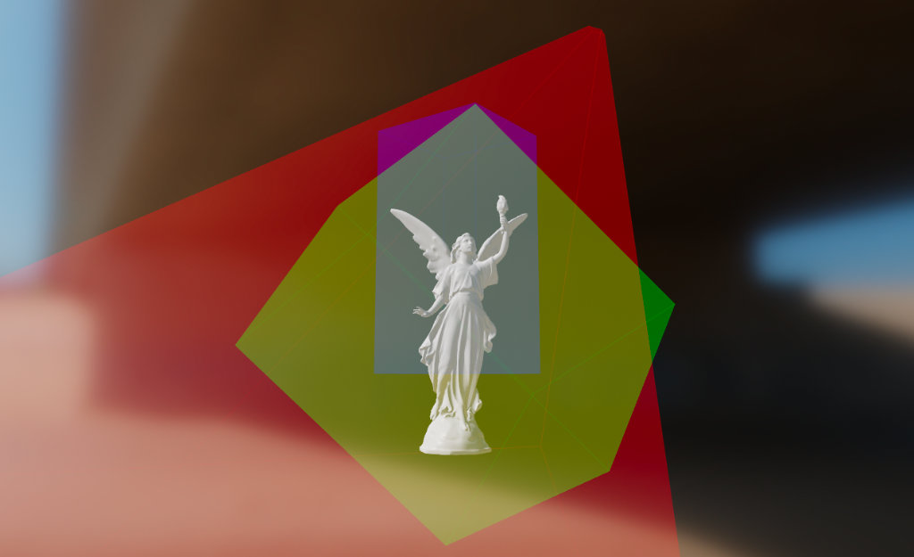
Specular glossiness
This alternative lighting model exists to comply with legacy standards. Since it is not a physically-based formulation, we do not recommend using it except when loading legacy assets.
This model encompasses the parameters previously defined for the standard lit mode except for metallic, reflectance, and roughness. It adds parameters for specularColor and glossiness.
| Parameter | Definition |
|---|---|
| baseColor | Surface diffuse color |
| specularColor | Specular tint (defaults to black) |
| glossiness | Glossiness (defaults to 0.0) |
[Table [glossinessProperties]: Properties of the specular-glossiness shading model]
The type and range of each property is described in table [glossinessPropertiesTypes].
| Property | Type | Range | Note |
|---|---|---|---|
| baseColor | float4 | [0..1] | Pre-multiplied linear RGB |
| specularColor | float3 | [0..1] | Linear RGB |
| glossiness | float | [0..1] | Inverse of roughness |
[Table [glossinessPropertiesTypes]: Range and type of the specular-glossiness model's properties]
Material definitions
A material definition is a text file that describes all the information required by a material:
- Name
- User parameters
- Material model
- Required attributes
- Interpolants (called variables)
- Raster state (blending mode, etc.)
- Shader code (fragment shader, optionally vertex shader)
Format
The material definition format is a format loosely based on JSON that we call JSONish. At the top level a material definition is composed of 3 different blocks that use the JSON object notation:
material {
// material properties
}
vertex {
// vertex shader, optional
}
fragment {
// fragment shader
}
A minimum viable material definition must contain a material preamble and a
fragment block. The vertex block is optional.
Differences with JSON
In JSON, an object is made of key/value pairs. A JSON pair has the following syntax:
"key" : value
Where value can be a string, number, object, array or a literal (true, false
or null). While this syntax is perfectly valid in a material definition, a
variant without quotes around strings is also accepted in JSONish:
key : value
Quotes remain mandatory when the string contains spaces.
The vertex and fragment blocks contain unescaped, unquoted GLSL code, which
is not valid in JSON.
Single-line C++-style comments are allowed.
The key of a pair is case-sensitive.
The value of a pair is not case-sensitive.
Example
The following code listing shows an example of a valid material definition. This
definition uses the lit material model (see Lit model section), uses the
default opaque blending mode, requires that a set of UV coordinates be presented
in the rendered mesh and defines 3 user parameters. The following sections of
this document describe the material and fragment blocks in detail.
material {
name : "Textured material",
parameters : [
{
type : sampler2d,
name : texture
},
{
type : float,
name : metallic
},
{
type : float,
name : roughness
}
],
requires : [
uv0
],
shadingModel : lit,
blending : opaque
}
fragment {
void material(inout MaterialInputs material) {
prepareMaterial(material);
material.baseColor = texture(materialParams_texture, getUV0());
material.metallic = materialParams.metallic;
material.roughness = materialParams.roughness;
}
}
Material block
The material block is mandatory block that contains a list of property pairs to describe all non-shader data.
General: name
Type
: string
Value : Any string. Double quotes are required if the name contains spaces.
Description : Sets the name of the material. The name is retained at runtime for debugging purpose.
material {
name : stone
}
material {
name : "Wet pavement"
}
General: featureLevel
Type
: number
Value : An integer value, either 1, 2 or 3. Defaults to 1.
| Feature Level | Guaranteed features |
|---|---|
| 1 | 9 textures per material |
| 2 | 9 textures per material, cubemap arrays, ESSL 3.10 |
| 3 | 12 textures per material, cubemap arrays, ESSL 3.10 |
[Table [featureLevels]: Feature levels]
Description
: Sets the feature level of the material. Each feature level defines a set of
features the material can use. If the material uses a feature not supported
by the selected level, matc will generate an error during compilation. A
given feature level is guaranteed to support all features of lower feature
levels.
material {
featureLevel : 2
}
Bugs
: matc doesn't verify that a material is not using features above its
selected feature level.
General: shadingModel
Type
: string
Value
: Any of lit, subsurface, cloth, unlit, specularGlossiness. Defaults
to lit.
Description : Selects the material model as described in the Material models section.
material {
shadingModel : unlit
}
material {
shadingModel : "subsurface"
}
General: parameters
Type : array of parameter objects
Value
: Each entry is an object with the properties name and type, both of
string type. The name must be a valid GLSL identifier. Entries also have
an optional precision, which can be one of default (best precision for
the platform, typically high on desktop, medium on mobile), low,
medium, high. The type must be one of the types described in table
[materialParamsTypes].
| Type | Description |
|---|---|
| bool | Single boolean |
| bool2 | Vector of 2 booleans |
| bool3 | Vector of 3 booleans |
| bool4 | Vector of 4 booleans |
| float | Single float |
| float2 | Vector of 2 floats |
| float3 | Vector of 3 floats |
| float4 | Vector of 4 floats |
| int | Single integer |
| int2 | Vector of 2 integers |
| int3 | Vector of 3 integers |
| int4 | Vector of 4 integers |
| uint | Single unsigned integer |
| uint2 | Vector of 2 unsigned integers |
| uint3 | Vector of 3 unsigned integers |
| uint4 | Vector of 4 unsigned integers |
| float3x3 | Matrix of 3x3 floats |
| float4x4 | Matrix of 4x4 floats |
| sampler2d | 2D texture |
| sampler2dArray | Array of 2D textures |
| samplerExternal | External texture (platform-specific) |
| samplerCubemap | Cubemap texture |
[Table [materialParamsTypes]: Material parameter types]
Samplers
: Sampler types can also specify a format which can be either int or
float (defaults to float).
Arrays
: A parameter can define an array of values by appending [size] after the
type name, where size is a positive integer. For instance: float[9]
declares an array of nine float values. This syntax does not apply to
samplers as arrays are treated as separate types.
Description : Lists the parameters required by your material. These parameters can be set at runtime using Filament's material API. Accessing parameters from the shaders varies depending on the type of parameter:
- **Samplers types**: use the parameter name prefixed with
`materialParams_`. For instance, `materialParams_myTexture`.
- **Other types**: use the parameter name as the field of a structure
called `materialParams`. For instance, `materialParams.myColor`.
material {
parameters : [
{
type : float4,
name : albedo
},
{
type : sampler2d,
format : float,
precision : high,
name : roughness
},
{
type : float2,
name : metallicReflectance
}
],
requires : [
uv0
],
shadingModel : lit,
}
fragment {
void material(inout MaterialInputs material) {
prepareMaterial(material);
material.baseColor = materialParams.albedo;
material.roughness = texture(materialParams_roughness, getUV0());
material.metallic = materialParams.metallicReflectance.x;
material.reflectance = materialParams.metallicReflectance.y;
}
}
General: constants
Type : array of constant objects
Value
: Each entry is an object with the properties name and type, both of
string type. The name must be a valid GLSL identifier. Entries also have
an optional default, which can either be a bool or number, depending
on the type of the constant. The type must be one of the types described
in table [materialConstantsTypes].
| Type | Description | Default |
|---|---|---|
| int | A signed, 32 bit GLSL int | |
| float | A single-precision GLSL float | 0.0 |
| bool | A GLSL bool | false |
[Table [materialConstantsTypes]: Material constants types]
Description
: Lists the constant parameters accepted by your material. These constants can
be set, or "specialized", at runtime when loading a material package.
Multiple materials can be loaded from the same material package with
differing constant parameter specializations. Once a material is loaded from
a material package, its constant parameters cannot be changed. Compared to
regular parameters, constant parameters allow the compiler to generate more
efficient code. Access constant parameters from the shader by prefixing the
name with materialConstant_. For example, a constant parameter named
myConstant is accessed in the shader as materialConstant_myConstant. If
a constant parameter is not set at runtime, the default is used.
material {
constants : [
{
name : overrideAlpha,
type : bool
},
{
name : customAlpha,
type : float,
default : 0.5
}
],
shadingModel : lit,
blending : transparent,
}
fragment {
void material(inout MaterialInputs material) {
prepareMaterial(material);
if (materialConstants_overrideAlpha) {
material.baseColor.a = materialConstants_customAlpha;
material.baseColor.rgb *= material.baseColor.a;
}
}
}
General: variantFilter
Type
: array of string
Value
: Each entry must be any of dynamicLighting, directionalLighting,
shadowReceiver, skinning, ssr, or stereo.
Description
: Used to specify a list of shader variants that the application guarantees
will never be needed. These shader variants are skipped during the code
generation phase, thus reducing the overall size of the material. Note that
some variants may automatically be filtered out. For instance, all lighting
related variants (directionalLighting, etc.) are filtered out when
compiling an unlit material. Use the variant filter with caution,
filtering out a variant required at runtime may lead to crashes.
Description of the variants: - directionalLighting, used when a directional
light is present in the scene - dynamicLighting, used when a non-directional
light (point, spot, etc.) is present in the scene - shadowReceiver, used when
an object can receive shadows - skinning, used when an object is animated
using GPU skinning - fog, used when global fog is applied to the scene -
vsm, used when VSM shadows are enabled and the object is a shadow receiver -
ssr, used when screen-space reflections are enabled in the View - stereo,
used when stereoscopic rendering is enabled in the View
material {
name : "Invisible shadow plane",
shadingModel : unlit,
shadowMultiplier : true,
blending : transparent,
variantFilter : [ skinning ]
}
General: flipUV
Type
: boolean
Value
: true or false. Defaults to true.
Description
: When set to true (default value), the Y coordinate of UV attributes will
be flipped when read by this material's vertex shader. Flipping is
equivalent to y = 1.0 - y. When set to false, flipping is disabled and
the UV attributes are read as is.
material {
flipUV : false
}
General: quality
Type
: string
Value
: Any of low, normal, high, default. Defaults to default.
Description
: Set some global quality parameters of the material. low enables
optimizations that can slightly affect correctness and is the default on
mobile platforms. normal does not affect correctness and is otherwise
similar to low. high enables quality settings that can adversely affect
performance and is the default on desktop platforms.
material {
quality : default
}
General: instanced
Type
: boolean
Value
: true or false. Defaults to false.
Description
: Allows a material to access the instance index (i.e.:
gl_InstanceIndex) of instanced primitives using getInstanceIndex()
in the material's shader code. Never use gl_InstanceIndex directly.
This is typically used with RenderableManager::Builder::instances().
getInstanceIndex() is available in both the vertex and fragment shader.
material {
instanced : true
}
General: vertexDomainDeviceJittered
Type
: boolean
Value
: true or false. Defaults to false.
Description
: Only meaningful for vertexDomain:Device materials, this parameter
specifies whether the filament clip-space transforms need to be applied or
not, which affects TAA and guard bands. Generally it needs to be applied
because by definition vertexDomain:Device materials vertices are not
transformed and used as is. However, if the vertex shader uses for
instance getViewFromClipMatrix() (or other matrices based on the
projection), the clip-space transform is already applied. Setting this
parameter incorrectly can prevent TAA or the guard bands to work correctly.
material {
vertexDomainDeviceJittered : true
}
Vertex and attributes: requires
Type
: array of string
Value
: Each entry must be any of uv0, uv1, color, position, tangents,
custom0 through custom7.
Description
: Lists the vertex attributes required by the material. The position
attribute is always required and does not need to be specified. The
tangents attribute is automatically required when selecting any shading
model that is not unlit. See the shader sections of this document for more
information on how to access these attributes from the shaders.
material {
parameters : [
{
type : sampler2d,
name : texture
},
],
requires : [
uv0,
custom0
],
shadingModel : lit,
}
fragment {
void material(inout MaterialInputs material) {
prepareMaterial(material);
material.baseColor = texture(materialParams_texture, getUV0());
material.baseColor.rgb *= getCustom0().rgb;
}
}
Vertex and attributes: variables
Type
: array of string
Value : Up to 4 strings, each must be a valid GLSL identifier.
Description
: Defines custom interpolants (or variables) that are output by the material's
vertex shader. Each entry of the array defines the name of an interpolant.
The full name in the fragment shader is the name of the interpolant with the
variable_ prefix. For instance, if you declare a variable called
eyeDirection you can access it in the fragment shader using
variable_eyeDirection. In the vertex shader, the interpolant name is
simply a member of the MaterialVertexInputs structure
(material.eyeDirection in your example). Each interpolant is of type
float4 (vec4) in the shaders.
material {
name : Skybox,
parameters : [
{
type : samplerCubemap,
name : skybox
}
],
variables : [
eyeDirection
],
vertexDomain : device,
depthWrite : false,
shadingModel : unlit
}
fragment {
void material(inout MaterialInputs material) {
prepareMaterial(material);
float3 sky = texture(materialParams_skybox, variable_eyeDirection.xyz).rgb;
material.baseColor = vec4(sky, 1.0);
}
}
vertex {
void materialVertex(inout MaterialVertexInputs material) {
float3 p = getPosition().xyz;
float3 u = mulMat4x4Float3(getViewFromClipMatrix(), p).xyz;
material.eyeDirection.xyz = mulMat3x3Float3(getWorldFromViewMatrix(), u);
}
}
Vertex and attributes: vertexDomain
Type
: string
Value
: Any of object, world, view, device. Defaults to object.
Description : Defines the domain (or coordinate space) of the rendered mesh. The domain influences how the vertices are transformed in the vertex shader. The possible domains are:
- **Object**: the vertices are defined in the object (or model) coordinate
space. The vertices are transformed using the rendered object's
transform matrix
- **World**: the vertices are defined in world coordinate space. The
vertices are not transformed using the rendered object's transform.
- **View**: the vertices are defined in view (or eye or camera) coordinate
space. The vertices are not transformed using the rendered object's
transform.
- **Device**: the vertices are defined in normalized device (or clip)
coordinate space. The vertices are not transformed using the rendered
object's transform.
material {
vertexDomain : device
}
Vertex and attributes: interpolation
Type
: string
Value
: Any of smooth, flat. Defaults to smooth.
Description
: Defines how interpolants (or variables) are interpolated between vertices.
When this property is set to smooth, a perspective correct interpolation
is performed on each interpolant. When set to flat, no interpolation is
performed and all the fragments within a given triangle will be shaded the
same.
material {
interpolation : flat
}
Blending and transparency: blending
Type
: string
Value
: Any of opaque, transparent, fade, add, masked, multiply,
screen. Defaults to opaque.
Description : Defines how/if the rendered object is blended with the content of the render target. The possible blending modes are:
- **Opaque**: blending is disabled, the alpha channel of the material's
output is ignored.
- **Transparent**: blending is enabled. The material's output is alpha
composited with the render target, using Porter-Duff's `source over`
rule. This blending mode assumes pre-multiplied alpha.
- **Fade**: acts as `transparent` but transparency is also applied to
specular lighting. In `transparent` mode, the material's alpha values
only applies to diffuse lighting. This blending mode is useful to fade
lit objects in and out.
- **Add**: blending is enabled. The material's output is added to the
content of the render target.
- **Multiply**: blending is enabled. The material's output is multiplied
with the content of the render target, darkening the content.
- **Screen**: blending is enabled. Effectively the opposite of the
`multiply`, the content of the render target is brightened.
- **Masked**: blending is disabled. This blending mode enables alpha
masking. The alpha channel of the material's output defines whether a
fragment is discarded or not. Additionally, ALPHA_TO_COVERAGE is enabled
for non-translucent views. See the maskThreshold section for more
information.
!!! Note When blending is set to masked, alpha to coverage is automatically
enabled for the material. If this behavior is undesirable, refer to the
Rasterization: alphaToCoverage section to turn alpha to coverage off using the
alphaToCoverage property.
material {
blending : transparent
}
Blending and transparency: postLightingBlending
Type
: string
Value
: Any of opaque, transparent, add. Defaults to transparent.
Description
: Defines how the postLightingColor material property is blended with the
result of the lighting computations. The possible blending modes are:
- **Opaque**: blending is disabled, the material will output
`postLightingColor` directly.
- **Transparent**: blending is enabled. The material's computed color is
alpha composited with the `postLightingColor`, using Porter-Duff's
`source over` rule. This blending mode assumes pre-multiplied alpha.
- **Add**: blending is enabled. The material's computed color is added to
`postLightingColor`.
- **Multiply**: blending is enabled. The material's computed color is
multiplied with `postLightingColor`.
- **Screen**: blending is enabled. The material's computed color is
inverted and multiplied with `postLightingColor`, and the result is
added to the material's computed color.
material {
postLightingBlending : add
}
Blending and transparency: transparency
Type
: string
Value
: Any of default, twoPassesOneSide or twoPassesTwoSides. Defaults to
default.
Description
: Controls how transparent objects are rendered. It is only valid when the
blending mode is not opaque and refractionMode is none. None of
these methods can accurately render concave geometry, but in practice they
are often good enough.
The three possible transparency modes are: - default: the transparent object
is rendered normally (as seen in figure [transparencyDefault]), honoring the
culling mode, etc. - twoPassesOneSide: the transparent object is first
rendered in the depth buffer, then again in the color buffer, honoring the
culling mode. This effectively renders only half of the transparent object as
shown in figure [transparencyTwoPassesOneSide]. - twoPassesTwoSides: the
transparent object is rendered twice in the color buffer: first with its back
faces, then with its front faces. This mode lets you render both set of faces
while reducing or eliminating sorting issues, as shown in figure
[transparencyTwoPassesTwoSides]. twoPassesTwoSides can be combined with
doubleSided for better effect.
material {
transparency : twoPassesOneSide
}
![Figure [transparencyDefault]: This double sided model shows the type of sorting issues transparent objects can be subject to in default mode](images/screenshot_transparency_default.png)
![Figure [transparencyTwoPassesOneSide]: In twoPassesOneSide mode, only one set of faces is visible and correctly sorted](images/screenshot_twopasses_oneside.png)
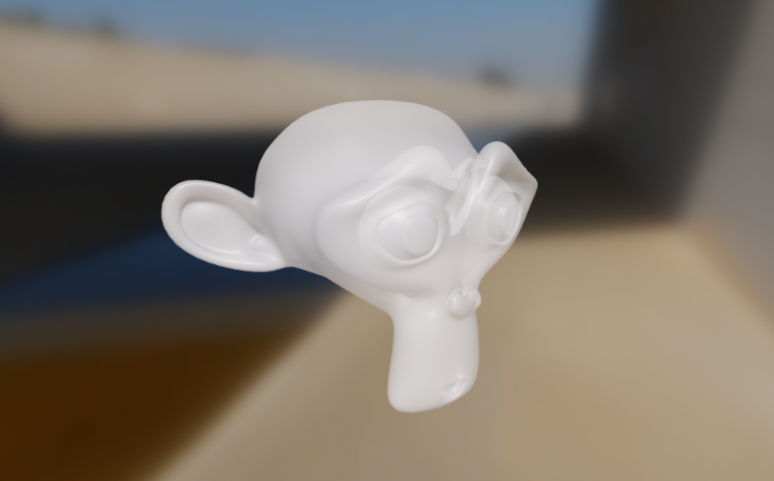
Blending and transparency: maskThreshold
Type
: number
Value
: A value between 0.0 and 1.0. Defaults to 0.4.
Description
: Sets the minimum alpha value a fragment must have to not be discarded when
the blending mode is set to masked. If the fragment is not discarded,
its source alpha is set to 1. When the blending mode is not masked, this
value is ignored. This value can be used to controlled the appearance of
alpha-masked objects.
material {
blending : masked,
maskThreshold : 0.5
}
Blending and transparency: refractionMode
Type
: string
Value
: Any of none, cubemap, screenspace. Defaults to none.
Description
: Activates refraction when set to anything but none. A value of cubemap
will only use the IBL cubemap as source of refraction, while this is
significantly more efficient, no scene objects will be refracted, only the
distant environment encoded in the cubemap. This mode is adequate for an
object viewer for instance. A value of screenspace will employ the more
advanced screen-space refraction algorithm which allows opaque objects in
the scene to be refracted. In cubemap mode, refracted rays are assumed to
emerge from the center of the object and the thickness parameter is only
used for computing the absorption, but has no impact on the refraction
itself. In screenspace mode, refracted rays are assumed to travel parallel
to the view direction when they exit the refractive medium.
material {
refractionMode : cubemap,
}
Blending and transparency: refractionType
Type
: string
Value
: Any of solid, thin. Defaults to solid.
Description
: This is only meaningful when refractionMode is set to anything but none.
refractionType defines the refraction model used. solid is used for
thick objects such as a crystal ball, an ice cube or as sculpture. thin is
used for thin objects such as a window, an ornament ball or a soap bubble.
In solid mode all refracive objects are assumed to be a sphere tangent to
the entry point and of radius thickness. In thin mode, all refractive
objects are assumed to be flat and thin and of thickness thickness.
material {
refractionMode : cubemap,
refractionType : thin,
}
Rasterization: culling
Type
: string
Value
: Any of none, front, back, frontAndBack. Defaults to back.
Description : Defines which triangles should be culled: none, front-facing triangles, back-facing triangles or all.
material {
culling : none
}
Rasterization: colorWrite
Type
: boolean
Value
: true or false. Defaults to true.
Description : Enables or disables writes to the color buffer.
material {
colorWrite : false
}
Rasterization: depthWrite
Type
: boolean
Value
: true or false. Defaults to true for opaque materials, false for
transparent materials.
Description : Enables or disables writes to the depth buffer.
material {
depthWrite : false
}
Rasterization: depthCulling
Type
: boolean
Value
: true or false. Defaults to true.
Description : Enables or disables depth testing. When depth testing is disabled, an object rendered with this material will always appear on top of other opaque objects.
material {
depthCulling : false
}
Rasterization: doubleSided
Type
: boolean
Value
: true or false. Defaults to false.
Description
: Enables two-sided rendering and its capability to be toggled at run time.
When set to true, culling is automatically set to none; if the
triangle is back-facing, the triangle's normal is flipped to become
front-facing. When explicitly set to false, this allows the
double-sidedness to be toggled at run time.
material {
name : "Double sided material",
shadingModel : lit,
doubleSided : true
}
fragment {
void material(inout MaterialInputs material) {
prepareMaterial(material);
material.baseColor = materialParams.albedo;
}
}
Rasterization: alphaToCoverage
Type
: boolean
Value
: true or false. Defaults to false.
Description
: Enables or disables alpha to coverage. When alpha to coverage is enabled,
the coverage of fragment is derived from its alpha. This property is only
meaningful when MSAA is enabled. Note: setting blending to masked
automatically enables alpha to coverage. If this is not desired, you can
override this behavior by setting alpha to coverage to false as in the
example below.
material {
name : "Alpha to coverage",
shadingModel : lit,
blending : masked,
alphaToCoverage : false
}
fragment {
void material(inout MaterialInputs material) {
prepareMaterial(material);
material.baseColor = materialParams.albedo;
}
}
Lighting: reflections
Type
: string
Value
: default or screenspace. Defaults to default.
Description
: Controls the source of specular reflections for this material. When this
property is set to default, reflections only come image-based lights. When
this property is set to screenspace, reflections come from the screen
space's color buffer in addition to image-based lights.
material {
name : "Glossy metal",
reflections : screenspace
}
Lighting: shadowMultiplier
Type
: boolean
Value
: true or false. Defaults to false.
Description
: Only available in the unlit shading model. If this property is enabled,
the final color computed by the material is multiplied by the shadowing
factor (or visibility). This allows to create transparent shadow-receiving
objects (for instance an invisible ground plane in AR). This is only
supported with shadows from directional lights.
material {
name : "Invisible shadow plane",
shadingModel : unlit,
shadowMultiplier : true,
blending : transparent
}
fragment {
void material(inout MaterialInputs material) {
prepareMaterial(material);
// baseColor defines the color and opacity of the final shadow
material.baseColor = vec4(0.0, 0.0, 0.0, 0.7);
}
}
Lighting: transparentShadow
Type
: boolean
Value
: true or false. Defaults to false.
Description
: Enables transparent shadows on this material. When this feature is enabled,
Filament emulates transparent shadows using a dithering pattern: they work
best with variance shadow maps (VSM) and blurring enabled. The opacity of
the shadow derives directly from the alpha channel of the material's
baseColor property. Transparent shadows can be enabled on opaque objects,
making them compatible with refractive/transmissive objects that are
otherwise considered opaque.
material {
name : "Clear plastic with stickers",
transparentShadow : true,
blending : transparent,
// ...
}
fragment {
void material(inout MaterialInputs material) {
prepareMaterial(material);
material.baseColor = texture(materialParams_baseColor, getUV0());
}
}
![Figure [transparentShadow]: Objects rendered with transparent shadows and blurry VSM with a radius of 4. Model Bottle of Water by T-Art.](images/screenshot_transparent_shadows.jpg)
Lighting: clearCoatIorChange
Type
: boolean
Value
: true or false. Defaults to true.
Description
: When adding a clear coat layer, the change in index of refraction (IoR) is
taken into account to modify the specular color of the base layer. This
appears to darken baseColor. When this effect is disabled, baseColor is
left unmodified. See figure [clearCoatIorChange] for an example of how this
property can affect a red metallic base layer.
material {
clearCoatIorChange : false
}
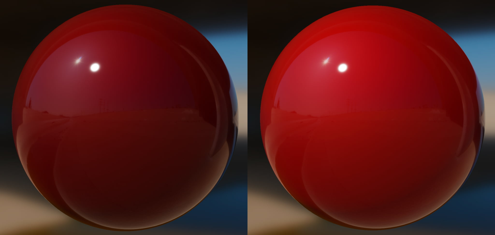
Lighting: multiBounceAmbientOcclusion
Type
: boolean
Value
: true or false. Defaults to false on mobile, true on desktop.
Description : Multi-bounce ambient occlusion takes into account interreflections when applying ambient occlusion to image-based lighting. Turning this feature on avoids over-darkening occluded areas. It also takes the surface color into account to generate colored ambient occlusion. Figure [multiBounceAO] compares the ambient occlusion term of a surface with and without multi-bounce ambient occlusion. Notice how multi-bounce ambient occlusion introduces color in the occluded areas. Figure [multiBounceAOAnimated] toggles between multi-bounce ambient occlusion on and off on a lit brick material to highlight the effects of this property.
material {
multiBounceAmbientOcclusion : true
}
![Figure [multiBounceAO]: Brick texture amient occlusion map rendered with multi-bounce ambient occclusion enabled (left) and disabled (right).](images/screenshot_multi_bounce_ao.jpg)
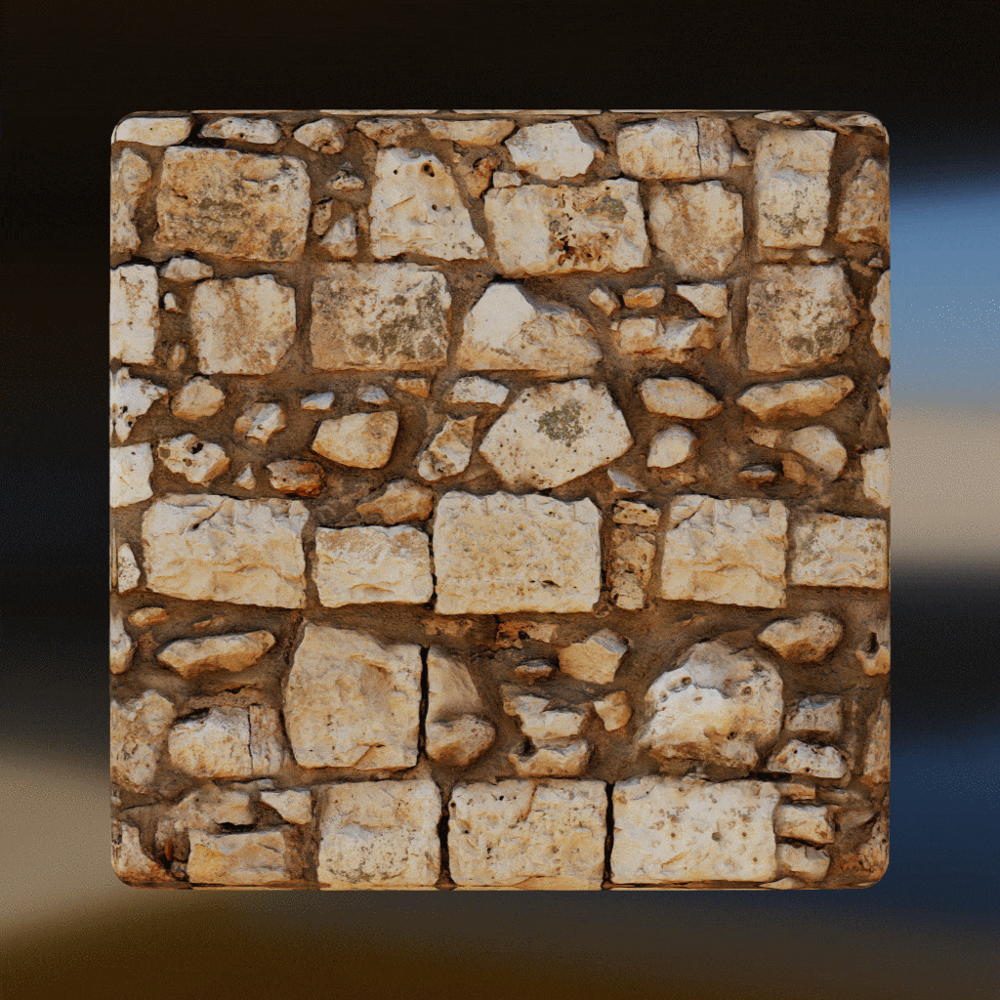
Lighting: specularAmbientOcclusion
Type
: string
Value
: none, simple or bentNormals. Defaults to none on mobile, simple on
desktop. For compatibility reasons, true and false are also accepted and
map respectively to simple and none.
Description
: Static ambient occlusion maps and dynamic ambient occlusion (SSAO, etc.)
apply to diffuse indirect lighting. When setting this property to other than
none, a new ambient occlusion term is derived from the surface roughness
and applied to specular indirect lighting. This effect helps remove unwanted
specular reflections as shown in figure [specularAO]. When this value is set
to simple, Filament uses a cheap but approximate method of computing the
specular ambient occlusion term. If this value is set to bentNormals,
Filament will use a much more accurate but much more expensive method.
material {
specularAmbientOcclusion : simple
}
Anti-aliasing: specularAntiAliasing
Type
: boolean
Value
: true or false. Defaults to false.
Description
: Reduces specular aliasing and preserves the shape of specular highlights as
an object moves away from the camera. This anti-aliasing solution is
particularly effective on glossy materials (low roughness) but increases the
cost of the material. The strength of the anti-aliasing effect can be
controlled using two other properties: specularAntiAliasingVariance and
specularAntiAliasingThreshold.
material {
specularAntiAliasing : true
}
Anti-aliasing: specularAntiAliasingVariance
Type
: float
Value : A value between 0 and 1, set to 0.15 by default.
Description : Sets the screen space variance of the filter kernel used when applying specular anti-aliasing. Higher values will increase the effect of the filter but may increase roughness in unwanted areas.
material {
specularAntiAliasingVariance : 0.2
}
Anti-aliasing: specularAntiAliasingThreshold
Type
: float
Value : A value between 0 and 1, set to 0.2 by default.
Description : Sets the clamping threshold used to suppress estimation errors when applying specular anti-aliasing. When set to 0, specular anti-aliasing is disabled.
material {
specularAntiAliasingThreshold : 0.1
}
Shading: customSurfaceShading
Type
: bool
Value
: true or false. Defaults to false.
Description : Enables custom surface shading when set to true. When surface shading is enabled, the fragment shader must provide an extra function that will be invoked for every light in the scene that may influence the current fragment. Please refer to the Custom surface shading section below for more information.
material {
customSurfaceShading : true
}
Vertex block
The vertex block is optional and can be used to control the vertex shading stage
of the material. The vertex block must contain valid
ESSL 3.0
code (the version of GLSL supported in OpenGL ES 3.0). You are free to create
multiple functions inside the vertex block but you must declare the
materialVertex function:
vertex {
void materialVertex(inout MaterialVertexInputs material) {
// vertex shading code
}
}
This function will be invoked automatically at runtime by the shading system and
gives you the ability to read and modify material properties using the
MaterialVertexInputs structure. This full definition of the structure can be
found in the Material vertex inputs section.
You can use this structure to compute your custom variables/interpolants or to modify the value of the attributes. For instance, the following vertex blocks modifies both the color and the UV coordinates of the vertex over time:
material {
requires : [uv0, color]
}
vertex {
void materialVertex(inout MaterialVertexInputs material) {
material.color *= sin(getUserTime().x);
material.uv0 *= sin(getUserTime().x);
}
}
In addition to the MaterialVertexInputs structure, your vertex shading code
can use all the public APIs listed in the Shader public APIs section.
Material vertex inputs
struct MaterialVertexInputs {
float4 color; // if the color attribute is required
float2 uv0; // if the uv0 attribute is required
float2 uv1; // if the uv1 attribute is required
float3 worldNormal; // only if the shading model is not unlit
float4 worldPosition; // always available (see note below about world-space)
mat4 clipSpaceTransform; // default: identity, transforms the clip-space position, only available for `vertexDomain:device`
// variable* names are replaced with actual names
float4 variable0; // if 1 or more variables is defined
float4 variable1; // if 2 or more variables is defined
float4 variable2; // if 3 or more variables is defined
float4 variable3; // if 4 or more variables is defined
};
!!! TIP: worldPosition To achieve good precision, the worldPosition coordinate
in the vertex shader is shifted by the camera position. To get the true
world-space position, users can use getUserWorldPosition(), however be aware
that the true world-position might not be able to fit in a float or might be
represented with severely reduced precision.
!!! TIP: UV attributes By default the vertex shader of a material will flip the
Y coordinate of the UV attributes of the current mesh: material.uv0 = vec2(mesh_uv0.x, 1.0 - mesh_uv0.y). You can control this behavior using the
flipUV property and setting it to false.
Custom vertex attributes
You can use up to 8 custom vertex attributes, all of type float4. These
attributes can be accessed using the vertex block shader functions
getCustom0() to getCustom7(). However, before using custom attributes, you
must declare those attributes as required in the requires property of the
material:
material {
requires : [
custom0,
custom1,
custom2
]
}
Fragment block
The fragment block must be used to control the fragment shading stage of the
material. The fragment block must contain valid
ESSL 3.0
code (the version of GLSL supported in OpenGL ES 3.0). You are free to create
multiple functions inside the fragment block but you must declare the
material function:
fragment {
void material(inout MaterialInputs material) {
prepareMaterial(material);
// fragment shading code
}
}
This function will be invoked automatically at runtime by the shading system and
gives you the ability to read and modify material properties using the
MaterialInputs structure. This full definition of the structure can be found
in the Material fragment inputs section. The full definition of the various
members of the structure can be found in the Material models section of this
document.
The goal of the material() function is to compute the material properties
specific to the selected shading model. For instance, here is a fragment block
that creates a glossy red metal using the standard lit shading model:
fragment {
void material(inout MaterialInputs material) {
prepareMaterial(material);
material.baseColor.rgb = vec3(1.0, 0.0, 0.0);
material.metallic = 1.0;
material.roughness = 0.0;
}
}
prepareMaterial function
Note that you must call prepareMaterial(material) before exiting the
material() function. This prepareMaterial function sets up the internal
state of the material model. Some of the APIs described in the Fragment APIs
section - like shading_normal for instance - can only be accessed after
invoking prepareMaterial().
It is also important to remember that the normal property - as described in
the Material fragment inputs section - only has an effect when modified before
calling prepareMaterial(). Here is an example of a fragment shader that
properly modifies the normal property to implement a glossy red plastic with
bump mapping:
fragment {
void material(inout MaterialInputs material) {
// fetch the normal in tangent space
vec3 normal = texture(materialParams_normalMap, getUV0()).xyz;
material.normal = normal * 2.0 - 1.0;
// prepare the material
prepareMaterial(material);
// from now on, shading_normal, etc. can be accessed
material.baseColor.rgb = vec3(1.0, 0.0, 0.0);
material.metallic = 0.0;
material.roughness = 1.0;
}
}
Material fragment inputs
struct MaterialInputs {
float4 baseColor; // default: float4(1.0)
float4 emissive; // default: float4(0.0, 0.0, 0.0, 1.0)
float4 postLightingColor; // default: float4(0.0)
// no other field is available with the unlit shading model
float roughness; // default: 1.0
float metallic; // default: 0.0, not available with cloth or specularGlossiness
float reflectance; // default: 0.5, not available with cloth or specularGlossiness
float ambientOcclusion; // default: 0.0
// not available when the shading model is subsurface or cloth
float3 sheenColor; // default: float3(0.0)
float sheenRoughness; // default: 0.0
float clearCoat; // default: 1.0
float clearCoatRoughness; // default: 0.0
float3 clearCoatNormal; // default: float3(0.0, 0.0, 1.0)
float anisotropy; // default: 0.0
float3 anisotropyDirection; // default: float3(1.0, 0.0, 0.0)
// only available when the shading model is subsurface or refraction is enabled
float thickness; // default: 0.5
// only available when the shading model is subsurface
float subsurfacePower; // default: 12.234
float3 subsurfaceColor; // default: float3(1.0)
// only available when the shading model is cloth
float3 sheenColor; // default: sqrt(baseColor)
float3 subsurfaceColor; // default: float3(0.0)
// only available when the shading model is specularGlossiness
float3 specularColor; // default: float3(0.0)
float glossiness; // default: 0.0
// not available when the shading model is unlit
// must be set before calling prepareMaterial()
float3 normal; // default: float3(0.0, 0.0, 1.0)
// only available when refraction is enabled
float transmission; // default: 1.0
float3 absorption; // default float3(0.0, 0.0, 0.0)
float ior; // default: 1.5
float microThickness; // default: 0.0, not available with refractionType "solid"
}
Custom surface shading
When customSurfaceShading is set to true in the material block, the fragment
block must declare and implement the surfaceShading function:
fragment {
void material(inout MaterialInputs material) {
prepareMaterial(material);
// prepare material inputs
}
vec3 surfaceShading(
const MaterialInputs materialInputs,
const ShadingData shadingData,
const LightData lightData
) {
return vec3(1.0); // output of custom lighting
}
}
This function will be invoked for every light (directional, spot or point) in
the scene that may influence the current fragment. The surfaceShading is
invoked with 3 sets of data:
MaterialInputs, as described in the Material fragment inputs section and prepared in thematerialfunction explained aboveShadingData, a structure containing values derived fromMaterialInputs(see below)LightData, a structure containing values specific to the light being currently evaluated (see below)
The surfaceShading function must return an RGB color in linear sRGB. Alpha
blending and alpha masking are handled outside of this function and must
therefore be ignored.
!!! Note: About shadowed fragments The surfaceShading function is invoked even
when a fragment is known to be fully in the shadow of the current light
(lightData.NdotL <= 0.0 or lightData.visibility <= 0.0). This gives more
flexibility to the surfaceShading function as it provides a simple way to
handle constant ambient lighting for instance.
!!! Warning: Shading models Custom surface shading only works with the lit
shading model. Attempting to use any other model will result in an error.
Shading data structure
struct ShadingData {
// The material's diffuse color, as derived from baseColor and metallic.
// This color is pre-multiplied by alpha and in the linear sRGB color space.
vec3 diffuseColor;
// The material's specular color, as derived from baseColor and metallic.
// This color is pre-multiplied by alpha and in the linear sRGB color space.
vec3 f0;
// The perceptual roughness is the roughness value set in MaterialInputs,
// with extra processing:
// - Clamped to safe values
// - Filtered if specularAntiAliasing is enabled
// This value is between 0.0 and 1.0.
float perceptualRoughness;
// The roughness value expected by BRDFs. This value is the square of
// perceptualRoughness. This value is between 0.0 and 1.0.
float roughness;
};
Light data structure
struct LightData {
// The color (.rgb) and pre-exposed intensity (.w) of the light.
// The color is an RGB value in the linear sRGB color space.
// The pre-exposed intensity is the intensity of the light multiplied by
// the camera's exposure value.
vec4 colorIntensity;
// The normalized light vector, in world space (direction from the
// current fragment's position to the light).
vec3 l;
// The dot product of the shading normal (with normal mapping applied)
// and the light vector. This value is equal to the result of
// saturate(dot(getWorldSpaceNormal(), lightData.l)).
// This value is always between 0.0 and 1.0. When the value is <= 0.0,
// the current fragment is not visible from the light and lighting
// computations can be skipped.
float NdotL;
// The position of the light in world space.
vec3 worldPosition;
// Attenuation of the light based on the distance from the current
// fragment to the light in world space. This value between 0.0 and 1.0
// is computed differently for each type of light (it's always 1.0 for
// directional lights).
float attenuation;
// Visibility factor computed from shadow maps or other occlusion data
// specific to the light being evaluated. This value is between 0.0 and
// 1.0.
float visibility;
};
Example
The material below shows how to use custom surface shading to implement a simplified toon shader:
material {
name : Toon,
shadingModel : lit,
parameters : [
{
type : float3,
name : baseColor
}
],
customSurfaceShading : true
}
fragment {
void material(inout MaterialInputs material) {
prepareMaterial(material);
material.baseColor.rgb = materialParams.baseColor;
}
vec3 surfaceShading(
const MaterialInputs materialInputs,
const ShadingData shadingData,
const LightData lightData
) {
// Number of visible shade transitions
const float shades = 5.0;
// Ambient intensity
const float ambient = 0.1;
float toon = max(ceil(lightData.NdotL * shades) / shades, ambient);
// Shadowing and attenuation
toon *= lightData.visibility * lightData.attenuation;
// Color and intensity
vec3 light = lightData.colorIntensity.rgb * lightData.colorIntensity.w;
return shadingData.diffuseColor * light * toon;
}
}
The result can be seen in figure [toonShading].
![Figure [toonShading]: simple toon shading implemented with custom surface shading](images/screenshot_toon_shading.png)
Shader public APIs
Types
While GLSL types can be used directly (vec4 or mat4) we recommend the use of
the following type aliases:
| Name | GLSL type | Description |
|---|---|---|
| bool2 | bvec2 | A vector of 2 booleans |
| bool3 | bvec3 | A vector of 3 booleans |
| bool4 | bvec4 | A vector of 4 booleans |
| int2 | ivec2 | A vector of 2 integers |
| int3 | ivec3 | A vector of 3 integers |
| int4 | ivec4 | A vector of 4 integers |
| uint2 | uvec2 | A vector of 2 unsigned integers |
| uint3 | uvec3 | A vector of 3 unsigned integers |
| uint4 | uvec4 | A vector of 4 unsigned integers |
| float2 | float2 | A vector of 2 floats |
| float3 | float3 | A vector of 3 floats |
| float4 | float4 | A vector of 4 floats |
| float4x4 | mat4 | A 4x4 float matrix |
| float3x3 | mat3 | A 3x3 float matrix |
Math
| Name | Type | Description |
|---|---|---|
| PI | float | A constant that represent \(\pi\) |
| HALF_PI | float | A constant that represent \(\frac{\pi}{2}\) |
| saturate(float x) | float | Clamps the specified value between 0.0 and 1.0 |
| pow5(float x) | float | Computes \(x^5\) |
| sq(float x) | float | Computes \(x^2\) |
| max3(float3 v) | float | Returns the maximum value of the specified float3 |
| mulMat4x4Float3(float4x4 m, float3 v) | float4 | Returns \(m * v\) |
| mulMat3x3Float3(float4x4 m, float3 v) | float4 | Returns \(m * v\)+ |
Matrices
| Name | Type | Description |
|---|---|---|
| getViewFromWorldMatrix() | float4x4 | Matrix that converts from world space to view/eye space |
| getWorldFromViewMatrix() | float4x4 | Matrix that converts from view/eye space to world space |
| getClipFromViewMatrix() | float4x4 | Matrix that converts from view/eye space to clip (NDC) space |
| getViewFromClipMatrix() | float4x4 | Matrix that converts from clip (NDC) space to view/eye space |
| getClipFromWorldMatrix() | float4x4 | Matrix that converts from world to clip (NDC) space |
| getWorldFromClipMatrix() | float4x4 | Matrix that converts from clip (NDC) space to world space |
Frame constants
| Name | Type | Description |
|---|---|---|
| getResolution() | float4 | Dimensions of the view's effective (physical) viewport in pixels: width, height, 1 / width, 1 / height. This might be different from View::getViewport() for instance because of added rendering guard-bands. |
| getWorldCameraPosition() | float3 | Position of the camera/eye in world space (see note below) |
| getWorldOffset() | float3 | [deprecated] The shift required to obtain API-level world space. Use getUserWorldPosition() instead |
| getUserWorldFromWorldMatrix() | float4x4 | Matrix that converts from world space to API-level (user) world space. |
| getTime() | float | Current time as a remainder of 1 second. Yields a value between 0 and 1 |
| getUserTime() | float4 | Current time in seconds: time, (double)time - time, 0, 0 |
| getUserTimeMod(float m) | float | Current time modulo m in seconds |
| getExposure() | float | Photometric exposure of the camera |
| getEV100() | float | Exposure value at ISO 100 of the camera |
!!! TIP: world space To achieve good precision, the "world space" in Filament's
shading system does not necessarily match the API-level world space. To obtain
the position of the API-level camera, custom materials can use
getUserWorldFromWorldMatrix() to transform getWorldCameraPosition().
Material globals
| Name | Type | Description |
|---|---|---|
| getMaterialGlobal0() | float4 | A vec4 visible by all materials, its value is set by View::setMaterialGlobal(0, float4). Its default value is {0,0,0,1}. |
| getMaterialGlobal1() | float4 | A vec4 visible by all materials, its value is set by View::setMaterialGlobal(1, float4). Its default value is {0,0,0,1}. |
| getMaterialGlobal2() | float4 | A vec4 visible by all materials, its value is set by View::setMaterialGlobal(2, float4). Its default value is {0,0,0,1}. |
| getMaterialGlobal3() | float4 | A vec4 visible by all materials, its value is set by View::setMaterialGlobal(3, float4). Its default value is {0,0,0,1}. |
Vertex only
The following APIs are only available from the vertex block:
| Name | Type | Description |
|---|---|---|
| getPosition() | float4 | Vertex position in the domain defined by the material (default: object/model space) |
| getCustom0() to getCustom7() | float4 | Custom vertex attribute |
| getWorldFromModelMatrix() | float4x4 | Matrix that converts from model (object) space to world space |
| getWorldFromModelNormalMatrix() | float3x3 | Matrix that converts normals from model (object) space to world space |
| getVertexIndex() | int | Index of the current vertex |
Fragment only
The following APIs are only available from the fragment block:
| Name | Type | Description |
|---|---|---|
| getWorldTangentFrame() | float3x3 | Matrix containing in each column the tangent (frame[0]), bi-tangent (frame[1]) and normal (frame[2]) of the vertex in world space. If the material does not compute a tangent space normal for bump mapping or if the shading is not anisotropic, only the normal is valid in this matrix. |
| getWorldPosition() | float3 | Position of the fragment in world space (see note below about world-space) |
| getUserWorldPosition() | float3 | Position of the fragment in API-level (user) world-space (see note below about world-space) |
| getWorldViewVector() | float3 | Normalized vector in world space from the fragment position to the eye |
| getWorldNormalVector() | float3 | Normalized normal in world space, after bump mapping (must be used after prepareMaterial()) |
| getWorldGeometricNormalVector() | float3 | Normalized normal in world space, before bump mapping (can be used before prepareMaterial()) |
| getWorldReflectedVector() | float3 | Reflection of the view vector about the normal (must be used after prepareMaterial()) |
| getNormalizedViewportCoord() | float3 | Normalized user viewport position (i.e. NDC coordinates normalized to [0, 1] for the position, [1, 0] for the depth), can be used before prepareMaterial()). Because the user viewport is smaller than the actual physical viewport, these coordinates can be negative or superior to 1 in the non-visible area of the physical viewport. |
| getNdotV() | float | The result of dot(normal, view), always strictly greater than 0 (must be used after prepareMaterial()) |
| getColor() | float4 | Interpolated color of the fragment, if the color attribute is required |
| getUV0() | float2 | First interpolated set of UV coordinates, only available if the uv0 attribute is required |
| getUV1() | float2 | First interpolated set of UV coordinates, only available if the uv1 attribute is required |
| getMaskThreshold() | float | Returns the mask threshold, only available when blending is set to masked |
| inverseTonemap(float3) | float3 | Applies the inverse tone mapping operator to the specified linear sRGB color and returns a linear sRGB color. This operation may be an approximation and works best with the "Filmic" tone mapping operator |
| inverseTonemapSRGB(float3) | float3 | Applies the inverse tone mapping operator to the specified non-linear sRGB color and returns a linear sRGB color. This operation may be an approximation and works best with the "Filmic" tone mapping operator |
| luminance(float3) | float | Computes the luminance of the specified linear sRGB color |
| ycbcrToRgb(float, float2) | float3 | Converts a luminance and CbCr pair to a sRGB color |
| uvToRenderTargetUV(float2) | float2 | Transforms a UV coordinate to allow sampling from a RenderTarget attachment |
!!! TIP: world-space To obtain API-level world-space coordinates, custom
materials should use getUserWorldPosition() or use
getUserWorldFromWorldMatrix(). Note that API-level world-space coordinates
should never or rarely be used because they may not fit in a float3 or have
severely reduced precision.
!!! TIP: sampling from render targets When sampling from a filament::Texture
that is attached to a filament::RenderTarget for materials in the surface
domain, please use uvToRenderTargetUV to transform the texture coordinate.
This will flip the coordinate depending on which backend is being used.
Compiling materials
Material packages can be compiled from material definitions using the command
line tool called matc. The simplest way to use matc is to specify an input
material definition (car_paint.mat in the example below) and an output
material package (car_paint.filamat in the example below):
$ matc -o ./materials/bin/car_paint.filamat ./materials/src/car_paint.mat
Shader validation
matc attempts to validate shaders when compiling a material package. The
example below shows an example of an error message generated when compiling a
material definition containing a typo in the fragment shader (metalic instead
of metallic). The reported line numbers are line numbers in the source
material definition file.
ERROR: 0:13: 'metalic' : no such field in structure
ERROR: 0:13: '' : compilation terminated
ERROR: 2 compilation errors. No code generated.
Could not compile material metal.mat
Flags
The command line flags relevant to application development are described in table [matcFlags].
| Flag | Value | Usage |
|---|---|---|
| -o, --output | [path] | Specify the output file path |
| -p, --platform | desktop/mobile/all | Select the target platform(s) |
| -a, --api | opengl/vulkan/all | Specify the target graphics API |
| -S, --optimize-size | N/A | Optimize compiled material for size instead of just performance |
| -r, --reflect | parameters | Outputs the specified metadata as JSON |
| -v, --variant-filter | [variant] | Filters out the specified, comma-separated variants |
[Table [matcFlags]: List of matc flags]
matc offers a few other flags that are irrelevant to application developers
and for internal use only.
--platform
By default, matc generates material packages containing shaders for all
supported platforms. If you wish to reduce the size of your material packages,
it is recommended to select only the appropriate target platform. For instance,
to compile a material package for Android only, run the following command:
$ matc -p mobile -o ./materials/bin/car_paint.filamat ./materials/src/car_paint.mat
--api
By default, matc generates material packages containing shaders for the OpenGL
API. You can choose to generate shaders for the Vulkan API in addition to the
OpenGL shaders. If you intend on targeting only Vulkan capable devices, you can
reduce the size of the material packages by generating only the set of Vulkan
shaders:
$ matc -a vulkan -o ./materials/bin/car_paint.filamat ./materials/src/car_paint.mat
--optimize-size
This flag applies fewer optimization techniques to try and keep the final material as small as possible. If the compiled material is deemed too large by default, using this flag might be a good compromise between runtime performance and size.
--reflect
This flag was designed to help build tools around matc. It allows you to print
out specific metadata in JSON format. The example below prints out the list of
parameters defined in Filament's standard skybox material. It produces a list of
2 parameters, named showSun and skybox, respectively a boolean and a cubemap
texture.
$ matc --reflect parameters filament/src/materials/skybox.mat
{
"parameters": [
{
"name": "showSun",
"type": "bool",
"size": "1"
},
{
"name": "skybox",
"type": "samplerCubemap",
"format": "float",
"precision": "default"
}
]
}
--variant-filter
This flag can be used to further reduce the size of a compiled material. It is
used to specify a list of shader variants that the application guarantees will
never be needed. These shader variants are skipped during the code generation
phase of matc, thus reducing the overall size of the material.
The variants must be specified as a comma-separated list, using one of the following available variants:
directionalLighting, used when a directional light is present in the scenedynamicLighting, used when a non-directional light (point, spot, etc.) is present in the sceneshadowReceiver, used when an object can receive shadowsskinning, used when an object is animated using GPU skinning or vertex morphingfog, used when global fog is applied to the scenevsm, used when VSM shadows are enabled and the object is a shadow receiverssr, used when screen-space reflections are enabled in the View
Example: --variant-filter=skinning,shadowReceiver
Note that some variants may automatically be filtered out. For instance, all
lighting related variants (directionalLighting, etc.) are filtered out when
compiling an unlit material.
When this flag is used, the specified variant filters are merged with the variant filters specified in the material itself.
Use this flag with caution, filtering out a variant required at runtime may lead to crashes.
Handling colors
Linear colors
If the color data comes from a texture, simply make sure you use an sRGB texture to benefit from automatic hardware conversion from sRGB to linear. If the color data is passed as a parameter to the material you can convert from sRGB to linear by running the following algorithm on each color channel:
float sRGB_to_linear(float color) {
return color <= 0.04045 ? color / 12.92 : pow((color + 0.055) / 1.055, 2.4);
}
Alternatively you can use one of the two cheaper but less accurate versions shown below:
// Cheaper
linearColor = pow(color, 2.2);
// Cheapest
linearColor = color * color;
Pre-multiplied alpha
A color uses pre-multiplied alpha if its RGB components are multiplied by the alpha channel:
// Compute pre-multiplied color
color.rgb *= color.a;
If the color is sampled from a texture, you can simply ensure that the texture data is pre-multiplied ahead of time. On Android, any texture uploaded from a Bitmap will be pre-multiplied by default.
Sampler usage in Materials
The number of usable sampler parameters (e.g.: type is sampler2d) in materials
is limited and depends on the material properties, shading model, feature level
and variant filter.
Feature level 1 and 2
unlit materials can use up to 12 samplers by default.
lit materials can use up to 9 samplers by default, however if refractionMode
or reflectionMode is set to screenspace that number is reduced to 8.
Finally if variantFilter contains the fog filter, an extra sampler is made
available, such that unlit materials can use up to 13 and lit materials up
to 10 samplers by default.
Feature level 3
16 samplers are available.
!!! TIP: external samplers Be aware that external samplers account for 2
regular samplers.
API Reference
Refer to the following for a complete reference to the Filament API.
iOS
The following section contains information and tutorials on building iOS apps with Filament.
CocoaPods Hello Triangle
As of release 1.8.0, you can install Filament in your iOS application using CocoaPods.
This guide will walk you through creating a basic "hello triangle" iOS application using Filament and the Metal backend.

The full source for this example is
here.
If you're just looking to get something up and running quickly, download the
project, pod install, build, and run.
We'll be walking through 7 steps to get the rotating triangle up and running. All of the code we'll be writing will be in a single ViewController.mm file, and you can follow along here.
- Creating a Boilerplate App
- Instantiating Filament
- Creating a SwapChain
- Clearing the Screen
- Drawing a Triangle
- Compiling a Custom Material
- Animating the Triangle
Creating a Boilerplate App with Filament
We'll start fresh by creating a new Single View App in Xcode.

Give your app a name, and use the default options.

If you haven't used CocoaPods before, I recommend watching this Route 85 video to help you get set up.
Create a Podfile in the Xcode project directory with the following:
platform :ios, '11.0'
target 'HelloCocoaPods' do
pod 'Filament'
end
Then run:
pod install
Close the project and then re-open the newly created HelloCocoaPods.xcworkspace file.
Instantiating the Filament Engine
Before we do anything with Filament, we first need to include the appropriate headers. Filament exposes a C++ API, so any files that include Filament headers need to be compiled in a variant of C++. We'll be using Objective-C++.
You should be able to simply change the extension of the default ViewController from .m to .mm, though I've found Xcode to be buggy with this on occasion. To make sure Xcode recognizes it as an Objective-C++ file, check that the type of file is "Objective-C++ Source".

Then, add the following to the top of ViewController.
#include <filament/Engine.h>
using namespace filament;
We'll need to keep track of a few Filament objects, so let's add a section for
private instance variables and add a pointer for our Engine instance.
@implementation Viewcontroller {
Engine* _engine;
}
The Filament Engine is our main entrypoint into Filament. We start by
instantiating it inside viewDidLoad.
- (void)viewDidLoad {
[super viewDidLoad];
_engine = Engine::create(Engine::Backend::METAL);
}
We specify Engine::Backend::METAL to select the Metal backend. Filament also
supports OpenGL on iOS, but we strongly recommend sticking to Metal.
Every Filament object we create must also be destroyed. Add the dealloc method
and the following:
- (void)dealloc {
_engine->destroy(&_engine);
}
If you compile and run the app now you should see output similar to the following:
FEngine (64 bits) created at 0x10ab94000 (threading is enabled)
FEngine resolved backend: Metal
Creating a SwapChain
Before we can render anything, we'll first need to create a SwapChain. The
SwapChain represents a platform-specific surface that can be rendered into. On
iOS with Metal, it's a
CAMetalLayer.
We could set up our own CAMetalLayer if we wanted to, but Apple provides a
MTKView that is already backed by a CAMetalLayer. It also has a delegate
protocol with some methods that will make things easier for us.
Inside Main.storyboard, change the type of ViewController's view to a MTKView.


Include the SwapChain.h and MTKView.h headers and make the ViewController
conform to the MTKViewDelegate protocol.
#include <filament/SwapChain.h>
#import <MetalKit/MTKView.h>
@interface ViewController () <MTKViewDelegate>
@end
Add a new private var:
SwapChain* _swapChain;
Inside viewDidLoad, we'll set our ViewController as the MTKView delegate
and instantiate our SwapChain. To instantiate the SwapChain, we pass in
view.layer which, because we set our View to a MTKView, will be a
CAMetalLayer. Filament's API is platform-agnostic, which is why we need to
cast the layer to a void*.
MTKView* mtkView = (MTKView*) self.view;
mtkView.delegate = self;
_swapChain = _engine->createSwapChain((__bridge void*) mtkView.layer);
The SwapChain needs to be destroyed in our dealloc function. We'll destroy
the objects in the reverse order we created them; the Engine object should
always be the the last object we destroy.
_engine->destroy(_swapChain);
_engine->destroy(&_engine);
Finally, add stubs for some MTKViewDelegate methods, which we'll fill in
later.
- (void)mtkView:(nonnull MTKView*)view drawableSizeWillChange:(CGSize)size {
// todo
}
- (void)drawInMTKView:(nonnull MTKView*)view {
// todo
}
Clearing The Screen
We now have a Filament Engine and SwapChain set up. We'll need a few more
objects before we can render anything.
A Filament Renderer gives us an API to render frames into the SwapChain. It
takes a View, which defines a Viewport, Scene and Camera for rendering.
The Camera represents a vantage point into a Scene, which contains
references to all the entities we want to render.
Creating these are objects is straightforward. First, include the appropriate headers
#include <filament/Renderer.h>
#include <filament/View.h>
#include <filament/Camera.h>
#include <filament/Scene.h>
#include <filament/Viewport.h>
#include <utils/Entity.h>
#include <utils/EntityManager.h>
using namespace utils;
add the following private vars
Renderer* _renderer;
View* _view;
Scene* _scene;
Camera* _camera;
Entity _cameraEntity;
and then instantiate them
_renderer = _engine->createRenderer();
_view = _engine->createView();
_scene = _engine->createScene();
The camera is a bit special. Filament uses an entity-component system, so we'll
first need to create an Entity which we then attach a Camera component to.
_cameraEntity = EntityManager::get().create();
_camera = _engine->createCamera(_cameraEntity);
Let's also inform our Renderer to clear to a light blue clear color, so we can
know everything is working.
_renderer->setClearOptions({
.clearColor = {0.25f, 0.5f, 1.0f, 1.0f},
.clear = true
});
The Camera and Scene need to be wired up to the View.
_view->setScene(_scene);
_view->setCamera(_camera);
Our newly created objects get cleaned up inside dealloc.
_engine->destroyCameraComponent(_cameraEntity);
EntityManager::get().destroy(_cameraEntity);
_engine->destroy(_scene);
_engine->destroy(_view);
_engine->destroy(_renderer);
We need to set the Viewport on our View, which we want to do whenever the
size of our SwapChain changes. We'll also update the projection matrix on our
camera.
Let's create a new method, resize:, which will update the Viewport on our
View to a given size. We'll call it in the mtkView:drawableSizeWillChange:
delegate method, and at the end of viewDidLoad:
- (void)resize:(CGSize)size {
_view->setViewport({0, 0, (uint32_t) size.width, (uint32_t) size.height});
const double aspect = size.width / size.height;
const double left = -2.0 * aspect;
const double right = 2.0 * aspect;
const double bottom = -2.0;
const double top = 2.0;
const double near = 0.0;
const double far = 1.0;
_camera->setProjection(Camera::Projection::ORTHO, left, right, bottom, top, near, far);
}
- (void)viewDidLoad {
...
// Give our View a starting size based on the drawable size.
[self resize:mtkView.drawableSize];
}
- (void)mtkView(nonnull MTKView*)view drawableSizeWillChange:(CGSize)size {
[self resize:size];
}
Lastly, in order to render, we'll call a few Filament API methods inside the
drawInMTKView: method:
- (void)drawInMTKView:(nonnull MTKView*)view {
if (_renderer->beginFrame(_swapChain)) {
_renderer->render(_view);
_renderer->endFrame();
}
}
The beginFrame method instructs Filament to start rendering to our specific
SwapChain instance. It returns true if the engine is ready for another
frame. It returns false to signal us to skip this frame, which could happen if
we're sending frames down too quickly for the GPU to process.
At this point, you should be able to build and run the app, and you'll see a blue screen.

Drawing a Triangle
In order to draw a triangle, we need to create vertex and index buffers to
define its geometry. We'll then create a Renderable component.
We'll start by including some additional headers and adding a few new private vars:
#include <filament/VertexBuffer.h>
#include <filament/IndexBuffer.h>
#include <filament/RenderableManager.h>
...
VertexBuffer* _vertexBuffer;
IndexBuffer* _indexBuffer;
Entity _triangle;
First, we'll define the data for a single vertex.
struct Vertex {
math::float2 position;
math::float3 color;
};
Creating a VertexBuffer and IndexBuffer is a matter of giving Filament a
pointer to the data, along with information on its layout and size. Filament
uses BufferDescriptors to accomplish this.
Inside viewDidLoad, we'll statically define some verticies and indices and
create a BufferDescriptor for each.
static const Vertex TRIANGLE_VERTICES[3] = {
{ { 0.867, -0.500}, {1.0, 0.0, 0.0} },
{ { 0.000, 1.000}, {0.0, 1.0, 0.0} },
{ {-0.867, -0.500}, {0.0, 0.0, 1.0} },
};
static const uint16_t TRIANGLE_INDICES[3] = { 0, 1, 2 };
VertexBuffer::BufferDescriptor vertices(TRIANGLE_VERTICES, sizeof(Vertex) * 3, nullptr);
IndexBuffer::BufferDescriptor indices(TRIANGLE_INDICES, sizeof(uint16_t) * 3, nullptr);
The last argument is an optional callback function, which will be called after
Filament is done uploading the data to the GPU. Inside the callback, you'd
typically release the memory of any buffers via a free or delete call. We
pass nullptr because we don't need a callback as our vertex and index buffer
memory is static.
Now we can instantiate our VertexBuffer and IndexBuffer.
using Type = VertexBuffer::AttributeType;
const uint8_t stride = sizeof(Vertex);
_vertexBuffer = VertexBuffer::Builder()
.vertexCount(3)
.bufferCount(1)
.attribute(VertexAttribute::POSITION, 0, Type::FLOAT2, offsetof(Vertex, position), stride)
.attribute(VertexAttribute::COLOR, 0, Type::FLOAT3, offsetof(Vertex, color), stride)
.build(*_engine);
_indexBuffer = IndexBuffer::Builder()
.indexCount(3)
.bufferType(IndexBuffer::IndexType::USHORT)
.build(*_engine);
_vertexBuffer->setBufferAt(*_engine, 0, std::move(vertices));
_indexBuffer->setBuffer(*_engine, std::move(indices));
We first create an Entity like we did for our camera. This time, we're
attaching a Renderable component to the entity. The Renderable component
takes geometry defined by our vertex and index buffers, and makes the entity
visible in our scene.
_triangle = utils::EntityManager::get().create();
using Primitive = RenderableManager::PrimitiveType;
RenderableManager::Builder(1)
.geometry(0, Primitive::TRIANGLES, _vertexBuffer, _indexBuffer, 0, 3)
.culling(false)
.receiveShadows(false)
.castShadows(false)
.build(*_engine, _triangle);
// Add the triangle to the scene.
_scene->addEntity(_triangle);
Destroy the entity and buffers in dealloc.
_engine->destroy(_triangle);
EntityManager::get().destroy(_triangle);
_engine->destroy(_indexBuffer);
_engine->destroy(_vertexBuffer);
If you build and run the app now, you should see a plain white triangle. When we
created the renderable, we didn't specify any specific Material to use, so
Filament used a default, white material. Let's create a custom material to color
the triangle.

Compiling a Custom Material
For simplicity, we're going to compile a custom material at runtime. For production, we recommend using our matc tool to compile materials offline. You can download it as part of one of our releases.
First, add a few more headers. We'll be using Filament's filamat library to compile a custom material.
#include <filament/Material.h>
#include <filament/MaterialInstance.h>
#include <filamat/MaterialBuilder.h>
We'll store our material in a new private var. We'll also need one to store a material instance. You can think of a material as a "template", where a material instance is an instantiation of the template (similar to OOP classes and instances). For more information on Filament materials, read the Filament Materials Guide.
Material* _material;
MaterialInstance* _materialInstance;
We'll use the filamat library to compile a material into a package, which we can
then load into Filament. The material will be simple; it will load the
interpolated color attribute and set it as the baseColor.
Make sure to insert this code into viewDidLoad before we create our
Renderable.
// init must be called before we can build any materials.
filamat::MaterialBuilder::init();
// Compile a custom material to use on the triangle.
filamat::Package pkg = filamat::MaterialBuilder()
// The material name, only used for debugging purposes.
.name("Triangle material")
// Use the unlit shading mode, because we don't have any lights in our scene.
.shading(filamat::MaterialBuilder::Shading::UNLIT)
// Expose the COLOR attribute visible to our shader code.
.require(VertexAttribute::COLOR)
// Custom GLSL fragment shader
.material("void material (inout MaterialInputs material) {"
" prepareMaterial(material);"
" material.baseColor = getColor();"
"}")
// Compile for Metal on mobile platforms.
.targetApi(filamat::MaterialBuilder::TargetApi::METAL)
.platform(filamat::MaterialBuilder::Platform::MOBILE)
.build();
assert(pkg.isValid());
// shutdown should be called after all materials are built.
filamat::MaterialBuilder::shutdown();
Now that we have a filamat::Package representing the material, we can use it
to instantiate a Filament Material. Note that again, we recommend using the
matc command-line tool to compile material packages during your app's
compilation phase if possible, instead of at run-time.
// Create a Filament material from the Package.
_material = Material::Builder()
.package(pkg.getData(), pkg.getSize())
.build(*_engine);
_materialInstance = _material->getDefaultInstance();
Now we can use the MaterialInstance when creating our Renderable.
// Create a renderable using our geometry and material.
using Primitive = RenderableManager::PrimitiveType;
RenderableManager::Builder(1)
.geometry(0, Primitive::TRIANGLES, _vertexBuffer, _indexBuffer, 0, 3)
// Use the MaterialInstance we just created.
.material(0, _materialInstance)
.culling(false)
.receiveShadows(false)
.castShadows(false)
.build(*_engine, _triangle);
Lastly, we make sure to destroy everything inside dealloc.
_engine->destroy(_materialInstance);
_engine->destroy(_material);
Build and run. You should see the same triangle, but with colors.

Animating the Triangle
We'll do this by animating a transform on our triangle entity. First, include a new header.
#include <filament/TransformManager.h>
When we create our triangle entity, we'll also attach a transform component.
We've already seen two other components: Renderable and Camera. The
Transform component allows us to set world-space transformations on entities.
Inside viewDidLoad, after we create the triangle entity's Renderable
component, we'll also attach a Transform component.
// Add a Transform component to the triangle, so we can animate it.
_engine->getTransformManager().create(_triangle);
Create a new function, update, and add call it inside the drawInMTKView:
method.
- (void)update {
auto& tm = _engine->getTransformManager();
auto i = tm.getInstance(_triangle);
const auto time = CACurrentMediaTime();
tm.setTransform(i, math::mat4f::rotation(time, math::float3 {0.0, 0.0, 1.0}));
}
- (void)drawInMTKView:(nonnull MTKView*)view {
[self update];
if (_renderer->beginFrame(_swapChain)) {
_renderer->render(_view);
_renderer->endFrame();
}
}
Now we should see the triangle rotate around its z axis.
Next Steps
In this guide we've covered how to install Filament with CocoaPods and get rendering using the Metal backend. We also compiled a custom material. Again, here's the complete sample code for the app. If you're interesting in learning more, check out Filament's additional iOS samples. If you have any problems, feel free to open an issue.
Web
The following section contains information, demos, and tutorials for building Filament web apps.
In addition to the contents of this book, you may also find the following external links helpful.
- WebGL Meetup Slides (2018)
Web Tutorials
The markdown source for these tutorials are not only used to generate this book;
they're also used to generate the JavaScript for the above demo. We use a small
Python script for weaving (generating HTML) and tangling (generating JS). In the
code samples, you'll often see // TODO: <some task>. These are special markers
that get replaced by subsequent code blocks.
Triangle Tutorial
Start your project
First, create a text file called triangle.html and fill it with the following HTML. This creates
a mobile-friendly page with a full-screen canvas.
<!DOCTYPE html>
<html lang="en">
<head>
<title>Filament Tutorial</title>
<meta charset="utf-8">
<meta name="viewport" content="width=device-width,user-scalable=no,initial-scale=1">
<style>
body { margin: 0; overflow: hidden; }
canvas { touch-action: none; width: 100%; height: 100%; }
</style>
</head>
<body>
<canvas></canvas>
<script src="filament.js"></script>
<script src="//unpkg.com/gl-matrix@2.8.1"></script>
<script src="triangle.js"></script>
</body>
</html>
The above HTML loads three JavaScript files:
filament.jsdoes a couple things:- Downloads assets and compiles the Filament WASM module.
- Contains high-level utilities, e.g. to simplify loading KTX textures from JavaScript.
gl-matrix-min.jsis a small library that provides vector math functionality.triangle.jswill contain your application code.
Go ahead and create triangle.js with the following content.
class App {
constructor() {
// TODO: create entities
this.render = this.render.bind(this);
this.resize = this.resize.bind(this);
window.addEventListener('resize', this.resize);
window.requestAnimationFrame(this.render);
}
render() {
// TODO: render scene
window.requestAnimationFrame(this.render);
}
resize() {
// TODO: adjust viewport and canvas
}
}
Filament.init(['triangle.filamat'], () => { window.app = new App() } );
The two calls to bind() allow us to pass instance methods as callbacks for animation and resize
events.
Filament.init() consumes two things: a list of asset URLs and a callback.
The callback will be triggered only after all assets finish downloading and the Filament module has
become ready. In our callback, we simply instantiated the App object, since we'll do most of the
work in its constructor. We also set the app instance into a Window property to make it accessible
from the developer console.
Go ahead and download triangle.filamat and place it in your project folder. This is a material package, which is a binary file that contains shaders and other bits of data that define a PBR material. We'll learn more about material packages in the next tutorial.
Spawn a local server
Because of CORS restrictions, your web app cannot fetch the material package directly from the file system. One way around this is to create a temporary server using Python or node:
python3 -m http.server # Python 3
python -m SimpleHTTPServer # Python 2.7
npx http-server -p 8000 # nodejs
To see if this works, navigate to http://localhost:8000 and check if you can load the page without any errors appearing in the developer console.
Take care not to use Python's simple server in production since it does not serve WebAssembly files with the correct MIME type.
Create the Engine and Scene
We now have a basic skeleton that can respond to paint and resize events. Let's start adding Filament objects to the app. Insert the following code into the top of the app constructor.
this.canvas = document.getElementsByTagName('canvas')[0];
const engine = this.engine = Filament.Engine.create(this.canvas);
The above snippet creates the Engine by passing it a canvas DOM object. The engine needs the
canvas in order to create a WebGL 2.0 context in its contructor.
The engine is a factory for many Filament entities, including Scene, which is a flat container of
entities. Let's go ahead and create a scene, then add a blank entity called triangle into the
scene.
this.scene = engine.createScene();
this.triangle = Filament.EntityManager.get().create();
this.scene.addEntity(this.triangle);
Filament uses an Entity-Component System. The triangle entity in the above snippet does not yet have an associated component. Later in the tutorial we will make it into a renderable. Renderables are entities that have associated draw calls.
Construct typed arrays
Next we'll create two typed arrays: a positions array with XY coordinates for each vertex, and a colors array with a 32-bit word for each vertex.
const TRIANGLE_POSITIONS = new Float32Array([
1, 0,
Math.cos(Math.PI * 2 / 3), Math.sin(Math.PI * 2 / 3),
Math.cos(Math.PI * 4 / 3), Math.sin(Math.PI * 4 / 3),
]);
const TRIANGLE_COLORS = new Uint32Array([0xffff0000, 0xff00ff00, 0xff0000ff]);
Next we'll use the positions and colors buffers to create a single VertexBuffer object.
const VertexAttribute = Filament.VertexAttribute;
const AttributeType = Filament.VertexBuffer$AttributeType;
this.vb = Filament.VertexBuffer.Builder()
.vertexCount(3)
.bufferCount(2)
.attribute(VertexAttribute.POSITION, 0, AttributeType.FLOAT2, 0, 8)
.attribute(VertexAttribute.COLOR, 1, AttributeType.UBYTE4, 0, 4)
.normalized(VertexAttribute.COLOR)
.build(engine);
this.vb.setBufferAt(engine, 0, TRIANGLE_POSITIONS);
this.vb.setBufferAt(engine, 1, TRIANGLE_COLORS);
The above snippet first creates aliases for two enum types, then constructs the vertex buffer using
its Builder method. After that, it pushes two buffer objects into the appropriate slots using
setBufferAt.
In the Filament API, the above builder pattern is often used for constructing objects in lieu of long argument lists. The daisy chain of function calls allows the client code to be somewhat self-documenting.
Our app sets up two buffer slots in the vertex buffer, and each slot is associated with a single attribute. Alternatively, we could have interleaved or concatenated these attributes into a single buffer slot.
Next we'll construct an index buffer. The index buffer for our triangle is trivial: it simply holds the integers 0,1,2.
this.ib = Filament.IndexBuffer.Builder()
.indexCount(3)
.bufferType(Filament.IndexBuffer$IndexType.USHORT)
.build(engine);
this.ib.setBuffer(engine, new Uint16Array([0, 1, 2]));
Note that constructing an index buffer is similar to constructing a vertex buffer, but it only has one buffer slot, and it can only contain two types of data (USHORT or UINT).
Finish up initialization
Next let's construct an actual Material from the material package that was downloaded (the
material is an object; the package is just a binary blob), then extract the default
MaterialInstance from the material object. Material instances have concrete values for their
parameters, and they can be bound to renderables. We'll learn more about material instances in the
next tutorial.
After extracting the material instance, we can finally create a renderable component for the triangle by setting up a bounding box and passing in the vertex and index buffers.
const mat = engine.createMaterial('triangle.filamat');
const matinst = mat.getDefaultInstance();
Filament.RenderableManager.Builder(1)
.boundingBox({ center: [-1, -1, -1], halfExtent: [1, 1, 1] })
.material(0, matinst)
.geometry(0, Filament.RenderableManager$PrimitiveType.TRIANGLES, this.vb, this.ib)
.build(engine, this.triangle);
Next let's wrap up the initialization routine by creating the swap chain, renderer, camera, and view.
this.swapChain = engine.createSwapChain();
this.renderer = engine.createRenderer();
this.camera = engine.createCamera(Filament.EntityManager.get().create());
this.view = engine.createView();
this.view.setCamera(this.camera);
this.view.setScene(this.scene);
// Set up a blue-green background:
this.renderer.setClearOptions({clearColor: [0.0, 0.1, 0.2, 1.0], clear: true});
// Adjust the initial viewport:
this.resize();
At this point, we're done creating all Filament entities, and the code should run without errors. However the canvas is still blank!
Render and resize handlers
Recall that our App class has a skeletal render method, which the browser calls every time it needs to repaint. Often this is 60 times a second.
render() {
// TODO: render scene
window.requestAnimationFrame(this.render);
}
Let's flesh this out by rotating the triangle and invoking the Filament renderer. Add the following code to the top of the render method.
// Rotate the triangle.
const radians = Date.now() / 1000;
const transform = mat4.fromRotation(mat4.create(), radians, [0, 0, 1]);
const tcm = this.engine.getTransformManager();
const inst = tcm.getInstance(this.triangle);
tcm.setTransform(inst, transform);
inst.delete();
// Render the frame.
this.renderer.render(this.swapChain, this.view);
The first half of our render method obtains the transform component of the triangle entity and uses gl-matrix to generate a rotation matrix.
The second half of our render method invokes the Filament renderer on the view, and tells the
Filament engine to execute its internal command buffer. The Filament renderer can tell the app
that it wants to skip a frame, hence the if statement.
One last step. Add the following code to the resize method. This adjusts the resolution of the
rendering surface when the window size changes, taking devicePixelRatio into account for high-DPI
displays. It also adjusts the camera frustum accordingly.
const dpr = window.devicePixelRatio;
const width = this.canvas.width = window.innerWidth * dpr;
const height = this.canvas.height = window.innerHeight * dpr;
this.view.setViewport([0, 0, width, height]);
const aspect = width / height;
const Projection = Filament.Camera$Projection;
this.camera.setProjection(Projection.ORTHO, -aspect, aspect, -1, 1, 0, 1);
You should now have a spinning triangle! The completed JavaScript is available here.
In the next tutorial, we'll take a closer look at Filament materials and 3D rendering.
Suzanne Tutorial
This tutorial will describe how to create the redball demo, introducing you to materials and textures.
For starters, create a text file called redball.html and copy over the HTML that we used in the
previous tutorial. Change the last script tag from triangle.js to redball.js.
Next you'll need to get a couple command-line tools: matc and cmgen. You can find these in the
appropriate Filament release. You should choose the
archive that corresponds to your development machine rather than the one for web, and the version
that matches the unpkg.com/filament@x.x.x url in the script tag of redball.html (you may check
out the last available release of filament on npm).
Define plastic material
The matc tool consumes a text file containing a high-level description of a PBR material, and
produces a binary material package that contains shader code and associated metadata. For more
information, see the official document describing the Filament Material System.
Let's try out matc. Create the following file in your favorite text editor and call it
plastic.mat.
material {
name : Lit,
shadingModel : lit,
parameters : [
{ type : float3, name : baseColor },
{ type : float, name : roughness },
{ type : float, name : clearCoat },
{ type : float, name : clearCoatRoughness }
],
}
fragment {
void material(inout MaterialInputs material) {
prepareMaterial(material);
material.baseColor.rgb = materialParams.baseColor;
material.roughness = materialParams.roughness;
material.clearCoat = materialParams.clearCoat;
material.clearCoatRoughness = materialParams.clearCoatRoughness;
}
}
Next, invoke matc as follows.
matc -a opengl -p mobile -o plastic.filamat plastic.mat
You should now have a material archive in your working directory, which we'll use later in the tutorial.
Bake environment map
Next we'll use Filament's cmgen tool to consume a HDR environment map in latlong format, and
produce two cubemap files: a mipmapped IBL and a blurry skybox.
Download pillars_2k.hdr, then invoke the following command in your terminal.
cmgen -x pillars_2k --format=ktx --size=256 --extract-blur=0.1 pillars_2k.hdr
You should now have a pillars_2k folder containing a couple KTX files for the IBL and skybox, as
well as a text file with spherical harmonics coefficients. You can discard the text file because the
IBL KTX contains these coefficients in its metadata.
Create JavaScript
Next, create redball.js with the following content.
const environ = 'pillars_2k';
const ibl_url = `${environ}/${environ}_ibl.ktx`;
const sky_url = `${environ}/${environ}_skybox.ktx`;
const filamat_url = 'plastic.filamat'
Filament.init([ filamat_url, ibl_url, sky_url ], () => {
// Create some global aliases to enums for convenience.
window.VertexAttribute = Filament.VertexAttribute;
window.AttributeType = Filament.VertexBuffer$AttributeType;
window.PrimitiveType = Filament.RenderableManager$PrimitiveType;
window.IndexType = Filament.IndexBuffer$IndexType;
window.Fov = Filament.Camera$Fov;
window.LightType = Filament.LightManager$Type;
// Obtain the canvas DOM object and pass it to the App.
const canvas = document.getElementsByTagName('canvas')[0];
window.app = new App(canvas);
} );
class App {
constructor(canvas) {
this.canvas = canvas;
const engine = this.engine = Filament.Engine.create(canvas);
const scene = engine.createScene();
// TODO: create material
// TODO: create sphere
// TODO: create lights
// TODO: create IBL
// TODO: create skybox
this.swapChain = engine.createSwapChain();
this.renderer = engine.createRenderer();
this.camera = engine.createCamera(Filament.EntityManager.get().create());
this.view = engine.createView();
this.view.setCamera(this.camera);
this.view.setScene(scene);
this.resize();
this.render = this.render.bind(this);
this.resize = this.resize.bind(this);
window.addEventListener('resize', this.resize);
window.requestAnimationFrame(this.render);
}
render() {
const eye = [0, 0, 4], center = [0, 0, 0], up = [0, 1, 0];
const radians = Date.now() / 10000;
vec3.rotateY(eye, eye, center, radians);
this.camera.lookAt(eye, center, up);
this.renderer.render(this.swapChain, this.view);
window.requestAnimationFrame(this.render);
}
resize() {
const dpr = window.devicePixelRatio;
const width = this.canvas.width = window.innerWidth * dpr;
const height = this.canvas.height = window.innerHeight * dpr;
this.view.setViewport([0, 0, width, height]);
this.camera.setProjectionFov(45, width / height, 1.0, 10.0, Fov.VERTICAL);
}
}
The above boilerplate should be familiar to you from the previous tutorial, although it loads in a new set of assets. We also added some animation to the camera.
Next let's create a material instance from the package that we built at the beginning the tutorial. Replace the create material comment with the following snippet.
const material = engine.createMaterial(filamat_url);
const matinstance = material.createInstance();
const red = [0.8, 0.0, 0.0];
matinstance.setColor3Parameter('baseColor', Filament.RgbType.sRGB, red);
matinstance.setFloatParameter('roughness', 0.5);
matinstance.setFloatParameter('clearCoat', 1.0);
matinstance.setFloatParameter('clearCoatRoughness', 0.3);
The next step is to create a renderable for the sphere. To help with this, we'll use the IcoSphere
utility class, whose constructor takes a LOD. Its job is to subdivide an icosadedron, producing
three arrays:
icosphere.verticesFloat32Array of XYZ coordinates.icosphere.tangentsUint16Array (interpreted as half-floats) encoding the surface orientation as quaternions.icosphere.trianglesUint16Array with triangle indices.
Let's go ahead use these arrays to build the vertex buffer and index buffer. Replace create sphere with the following snippet.
const renderable = Filament.EntityManager.get().create();
scene.addEntity(renderable);
const icosphere = new Filament.IcoSphere(5);
const vb = Filament.VertexBuffer.Builder()
.vertexCount(icosphere.vertices.length / 3)
.bufferCount(2)
.attribute(VertexAttribute.POSITION, 0, AttributeType.FLOAT3, 0, 0)
.attribute(VertexAttribute.TANGENTS, 1, AttributeType.SHORT4, 0, 0)
.normalized(VertexAttribute.TANGENTS)
.build(engine);
const ib = Filament.IndexBuffer.Builder()
.indexCount(icosphere.triangles.length)
.bufferType(IndexType.USHORT)
.build(engine);
vb.setBufferAt(engine, 0, icosphere.vertices);
vb.setBufferAt(engine, 1, icosphere.tangents);
ib.setBuffer(engine, icosphere.triangles);
Filament.RenderableManager.Builder(1)
.boundingBox({ center: [-1, -1, -1], halfExtent: [1, 1, 1] })
.material(0, matinstance)
.geometry(0, PrimitiveType.TRIANGLES, vb, ib)
.build(engine, renderable);
At this point, the app is rendering a sphere, but it is black so it doesn't show up. To prove that
the sphere is there, you can try changing the background color to blue via setClearColor, like we
did in the first tutorial.
Add lighting
In this section we will create some directional light sources, as well as an image-based light (IBL) defined by one of the KTX files we built at the start of the demo. First, replace the create lights comment with the following snippet.
const sunlight = Filament.EntityManager.get().create();
scene.addEntity(sunlight);
Filament.LightManager.Builder(LightType.SUN)
.color([0.98, 0.92, 0.89])
.intensity(110000.0)
.direction([0.6, -1.0, -0.8])
.sunAngularRadius(1.9)
.sunHaloSize(10.0)
.sunHaloFalloff(80.0)
.build(engine, sunlight);
const backlight = Filament.EntityManager.get().create();
scene.addEntity(backlight);
Filament.LightManager.Builder(LightType.DIRECTIONAL)
.direction([-1, 0, 1])
.intensity(50000.0)
.build(engine, backlight);
The SUN light source is similar to the DIRECTIONAL light source, but has some extra
parameters because Filament will automatically draw a disk into the skybox.
Next we need to create an IndirectLight object from the KTX IBL. One way of doing this is the
following (don't type this out, there's an easier way).
const format = Filament.PixelDataFormat.RGB;
const datatype = Filament.PixelDataType.UINT_10F_11F_11F_REV;
// Create a Texture object for the mipmapped cubemap.
const ibl_package = Filament.Buffer(Filament.assets[ibl_url]);
const iblktx = new Filament.Ktx1Bundle(ibl_package);
const ibltex = Filament.Texture.Builder()
.width(iblktx.info().pixelWidth)
.height(iblktx.info().pixelHeight)
.levels(iblktx.getNumMipLevels())
.sampler(Filament.Texture$Sampler.SAMPLER_CUBEMAP)
.format(Filament.Texture$InternalFormat.RGBA8)
.build(engine);
for (let level = 0; level < iblktx.getNumMipLevels(); ++level) {
const uint8array = iblktx.getCubeBlob(level).getBytes();
const pixelbuffer = Filament.PixelBuffer(uint8array, format, datatype);
ibltex.setImageCube(engine, level, pixelbuffer);
}
// Parse the spherical harmonics metadata.
const shstring = iblktx.getMetadata('sh');
const shfloats = shstring.split(/\s/, 9 * 3).map(parseFloat);
// Build the IBL object and insert it into the scene.
const indirectLight = Filament.IndirectLight.Builder()
.reflections(ibltex)
.irradianceSh(3, shfloats)
.intensity(50000.0)
.build(engine);
scene.setIndirectLight(indirectLight);
Filament provides a JavaScript utility to make this simpler, simply replace the create IBL comment with the following snippet.
const indirectLight = engine.createIblFromKtx1(ibl_url);
indirectLight.setIntensity(50000);
scene.setIndirectLight(indirectLight);
Add background
At this point you can run the demo and you should see a red plastic ball against a black background. Without a skybox, the reflections on the ball are not representative of its surroundings. Here's one way to create a texture for the skybox:
const sky_package = Filament.Buffer(Filament.assets[sky_url]);
const skyktx = new Filament.Ktx1Bundle(sky_package);
const skytex = Filament.Texture.Builder()
.width(skyktx.info().pixelWidth)
.height(skyktx.info().pixelHeight)
.levels(1)
.sampler(Filament.Texture$Sampler.SAMPLER_CUBEMAP)
.format(Filament.Texture$InternalFormat.RGBA8)
.build(engine);
const uint8array = skyktx.getCubeBlob(0).getBytes();
const pixelbuffer = Filament.PixelBuffer(uint8array, format, datatype);
skytex.setImageCube(engine, 0, pixelbuffer);
Filament provides a Javascript utility to make this easier. Replace create skybox with the following.
const skybox = engine.createSkyFromKtx1(sky_url);
scene.setSkybox(skybox);
That's it, we now have a shiny red ball floating in an environment! The complete JavaScript file is available here.
In the next tutorial, we'll take a closer look at textures and interaction.
Suzanne Tutorial
This tutorial will describe how to create the suzanne demo, introducing you to compressed textures, mipmap generation, asynchronous texture loading, and trackball rotation.
Much like the previous tutorial, you'll need to use the command-line tools that can be found in
the appropriate Filament release for your development machine. In addition to matc and cmgen,
we'll also be using filamesh and mipgen.
Create filamesh file
Filament does not have an asset loading system, but it does provide a binary mesh format
called filamesh for simple use cases. Let's create a compressed filamesh file for suzanne by
converting this OBJ file:
filamesh --compress monkey.obj suzanne.filamesh
Create mipmapped textures
Next, let's create mipmapped KTX files using filament's mipgen tool. We'll create compressed and
non-compressed variants for each texture, since not all platforms support the same compression
formats. First copy over the PNG files from the monkey folder, then do:
# Create mipmaps for base color
mipgen albedo.png albedo.ktx2
mipgen --compression=uastc albedo.png albedo.ktx2
# Create mipmaps for the normal map and a compressed variant.
mipgen --strip-alpha --kernel=NORMALS --linear normal.png normal.ktx
mipgen --strip-alpha --kernel=NORMALS --linear --compression=uastc_normals \
normal.png normal.ktx2
# Create mipmaps for the single-component roughness map and a compressed variant.
mipgen --grayscale roughness.png roughness.ktx
mipgen --grayscale --compression=uastc roughness.png roughness.ktx2
# Create mipmaps for the single-component metallic map and a compressed variant.
mipgen --grayscale metallic.png metallic.ktx
mipgen --grayscale --compression=uastc metallic.png metallic.ktx2
# Create mipmaps for the single-component occlusion map and a compressed variant.
mipgen --grayscale ao.png ao.ktx
mipgen --grayscale --compression=uastc ao.png ao.ktx2
For more information on mipgen's arguments and supported formats, do mipgen --help.
In a production setting, you'd want to invoke these commands with a script or build system.
Bake environment map
Much like the previous tutorial we need to use Filament's cmgen tool to produce cubemap files.
Download venetian_crossroads_2k.hdr, then invoke the following commands in your terminal.
cmgen -x . --format=ktx --size=64 --extract-blur=0.1 venetian_crossroads_2k.hdr
cd venetian* ; mv venetian*_ibl.ktx venetian_crossroads_2k_skybox_tiny.ktx ; cd -
cmgen -x . --format=ktx --size=256 --extract-blur=0.1 venetian_crossroads_2k.hdr
cmgen -x . --format=ktx --size=256 --extract-blur=0.1 venetian_crossroads_2k.hdr
cmgen -x . --format=ktx --size=256 --extract-blur=0.1 venetian_crossroads_2k.hdr
Define textured material
You might recall the filamat file we generated in the previous tutorial for red plastic. For this
demo, we'll create a material that uses textures for several parameters.
Create the following text file and call it textured.mat. Note that our material definition now
requires a uv0 attribute.
material {
name : textured,
requires : [ uv0 ],
shadingModel : lit,
parameters : [
{ type : sampler2d, name : albedo },
{ type : sampler2d, name : roughness },
{ type : sampler2d, name : metallic },
{ type : float, name : clearCoat },
{ type : sampler2d, name : normal },
{ type : sampler2d, name : ao }
],
}
fragment {
void material(inout MaterialInputs material) {
material.normal = texture(materialParams_normal, getUV0()).xyz * 2.0 - 1.0;
prepareMaterial(material);
material.baseColor = texture(materialParams_albedo, getUV0());
material.roughness = texture(materialParams_roughness, getUV0()).r;
material.metallic = texture(materialParams_metallic, getUV0()).r;
material.clearCoat = materialParams.clearCoat;
material.ambientOcclusion = texture(materialParams_ao, getUV0()).r;
}
}
Next, invoke matc as follows.
matc -a opengl -p mobile -o textured.filamat textured.mat
You should now have a material archive in your working directory. For the suzanne asset, the normal map adds scratches, the albedo map paints the eyes white, and so on. For more information on materials, consult the official document describing the Filament Material System.
Create app skeleton
Create a text file called suzanne.html and copy over the HTML that we used in the previous
tutorial. Change the last script tag from redball.js to suzanne.js. Next, create suzanne.js
with the following content.
// TODO: declare asset URLs
Filament.init([ filamat_url, filamesh_url, sky_small_url, ibl_url ], () => {
window.app = new App(document.getElementsByTagName('canvas')[0]);
});
class App {
constructor(canvas) {
this.canvas = canvas;
this.engine = Filament.Engine.create(canvas);
this.scene = this.engine.createScene();
const material = this.engine.createMaterial(filamat_url);
this.matinstance = material.createInstance();
const filamesh = this.engine.loadFilamesh(filamesh_url, this.matinstance);
this.suzanne = filamesh.renderable;
// TODO: create sky box and IBL
// TODO: initialize gltumble
// TODO: fetch larger assets
this.swapChain = this.engine.createSwapChain();
this.renderer = this.engine.createRenderer();
this.camera = this.engine.createCamera(Filament.EntityManager.get().create());
this.view = this.engine.createView();
this.view.setCamera(this.camera);
this.view.setScene(this.scene);
this.render = this.render.bind(this);
this.resize = this.resize.bind(this);
window.addEventListener('resize', this.resize);
const eye = [0, 0, 4], center = [0, 0, 0], up = [0, 1, 0];
this.camera.lookAt(eye, center, up);
this.resize();
window.requestAnimationFrame(this.render);
}
render() {
// TODO: apply gltumble matrix
this.renderer.render(this.swapChain, this.view);
window.requestAnimationFrame(this.render);
}
resize() {
const dpr = window.devicePixelRatio;
const width = this.canvas.width = window.innerWidth * dpr;
const height = this.canvas.height = window.innerHeight * dpr;
this.view.setViewport([0, 0, width, height]);
const aspect = width / height;
const Fov = Filament.Camera$Fov, fov = aspect < 1 ? Fov.HORIZONTAL : Fov.VERTICAL;
this.camera.setProjectionFov(45, aspect, 1.0, 10.0, fov);
}
}
Our app will only require a subset of assets to be present for App construction. We'll download
the other assets after construction. By using a progressive loading strategy, we can reduce the
perceived load time.
Next we need to supply the URLs for various assets. This is actually a bit tricky, because different clients have different capabilities for compressed textures.
To help you download only the texture assets that you need, Filament provides a
getSupportedFormatSuffix function. This takes a space-separated list of desired format types
(etc, s3tc, or astc) that the app developer knows is available from the server. The function
performs an intersection of the desired set with the supported set, then returns an appropriate
string -- which might be empty.
In our case, we know that our web server will have astc and s3tc variants for albedo, and etc
variants for the other textures. The uncompressed variants (empty string) are always available as a
last resort. Go ahead and replace the declare asset URLs comment with the following snippet.
const albedo_suffix = Filament.getSupportedFormatSuffix('astc s3tc_srgb');
const texture_suffix = Filament.getSupportedFormatSuffix('etc');
const environ = 'venetian_crossroads_2k'
const ibl_url = `${environ}/${environ}_ibl.ktx`;
const sky_small_url = `${environ}/${environ}_skybox_tiny.ktx`;
const sky_large_url = `${environ}/${environ}_skybox.ktx`;
const albedo_url = `albedo${albedo_suffix}.ktx`;
const ao_url = `ao${texture_suffix}.ktx`;
const metallic_url = `metallic${texture_suffix}.ktx`;
const normal_url = `normal${texture_suffix}.ktx`;
const roughness_url = `roughness${texture_suffix}.ktx`;
const filamat_url = 'textured.filamat';
const filamesh_url = 'suzanne.filamesh';
Create skybox and IBL
Next, let's create the low-resolution skybox and IBL in the App constructor.
this.skybox = this.engine.createSkyFromKtx1(sky_small_url);
this.scene.setSkybox(this.skybox);
this.indirectLight = this.engine.createIblFromKtx1(ibl_url);
this.indirectLight.setIntensity(100000);
this.scene.setIndirectLight(this.indirectLight);
This allows users to see a reasonable background fairly quickly, before larger assets have finished loading in.
Fetch assets asychronously
Next we'll invoke the Filament.fetch function from within the app constructor. This function is
very similar to Filament.init. It takes a list of asset URLs and a callback function that triggers
when the assets have finished downloading.
In our callback, we'll make several setTextureParameter calls on the material instance, then we'll
recreate the skybox using a higher-resolution texture. As a last step we unhide the renderable that
was created in the app constructor.
Filament.fetch([sky_large_url, albedo_url, roughness_url, metallic_url, normal_url, ao_url], () => {
const albedo = this.engine.createTextureFromKtx2(albedo_url, {srgb: true});
const roughness = this.engine.createTextureFromKtx2(roughness_url);
const metallic = this.engine.createTextureFromKtx2(metallic_url);
const normal = this.engine.createTextureFromKtx2(normal_url);
const ao = this.engine.createTextureFromKtx2(ao_url);
const sampler = new Filament.TextureSampler(
Filament.MinFilter.LINEAR_MIPMAP_LINEAR,
Filament.MagFilter.LINEAR,
Filament.WrapMode.CLAMP_TO_EDGE);
this.matinstance.setTextureParameter('albedo', albedo, sampler);
this.matinstance.setTextureParameter('roughness', roughness, sampler);
this.matinstance.setTextureParameter('metallic', metallic, sampler);
this.matinstance.setTextureParameter('normal', normal, sampler);
this.matinstance.setTextureParameter('ao', ao, sampler);
// Replace low-res skybox with high-res skybox.
this.engine.destroySkybox(this.skybox);
this.skybox = this.engine.createSkyFromKtx1(sky_large_url);
this.scene.setSkybox(this.skybox);
this.scene.addEntity(this.suzanne);
});
Introduce trackball rotation
Add the following script tag to your HTML file. This imports a small third-party library that listens for drag events and computes a rotation matrix.
<script src="//unpkg.com/gltumble"></script>
Next, replace the initialize gltumble and apply gltumble matrix comments with the following two code snippets.
this.trackball = new Trackball(canvas, {startSpin: 0.035});
const tcm = this.engine.getTransformManager();
const inst = tcm.getInstance(this.suzanne);
tcm.setTransform(inst, this.trackball.getMatrix());
inst.delete();
That's it, we now have a fast-loading interactive demo. The complete JavaScript file is available here.
Developing Filament
The following section is aimed at contributors to the Filament project, but may contain insights for downstream users as well.
Filament Debugging
Debugging Vulkan on Linux
Enable Validation Logs
Simply install the LunarG SDK (it's fast and easy), then make sure you've got the following environment variables set up in your bashrc file. For example:
export VULKAN_SDK='/path_to_home/VulkanSDK/1.3.216.0/x86_64'
export VK_LAYER_PATH="$VULKAN_SDK/etc/explicit_layer.d"
export PATH="$VULKAN_SDK/bin:$PATH"
As long as you're running a debug build of Filament, you should now see extra debugging spew in your console if there are any errors or performance issues being caught by validation.
Frame Capture in RenderDoc
The following instructions assume you've already installed the LunarG SDK and therefore have the
VK_LAYER_PATH environment variable.
- Modify
VulkanDriver.cppby definingENABLE_RENDERDOC - Download the RenderDoc tarball for Linux and unzip it somewhere.
- Find
renderdoc_capture.jsonin the unzipped folders and copy it toVK_LAYER_PATH. For example:
cp ~/Downloads/renderdoc_1.0/etc/vulkan/implicit_layer.d/renderdoc_capture.json ${VK_LAYER_PATH}
- Edit
${VK_LAYER_PATH}/renderdoc_capture.jsonand update thelibrary_pathattribute. - Launch RenderDoc by running
renderdoc_1.0/bin/qrenderdoc. - Go to the Launch Application tab and click the ellipses next to Environment Variables.
- Add VK_LAYER_PATH so that it matches whatever you've got set in your bashrc.
- Save yourself some time in the future by clicking Save Settings after setting up the working directory, executable path, etc.
- Click Launch in RenderDoc, then press F12 in your app. You should see a new capture show up in RenderDoc.
Enable Metal Validation
To enable the Metal validation layers when running a sample through the command-line, set the following environment variable:
export METAL_DEVICE_WRAPPER_TYPE=1
You should then see the following output when running a sample with the Metal backend:
2020-10-13 18:01:44.101 gltf_viewer[73303:4946828] Metal API Validation Enabled
Metal Frame Capture from gltf_viewer
To capture Metal frames from within gltf_viewer:
1. Create an Info.plist file
Create an Info.plist file in the same directory as gltf_viewer (cmake/samples). Set its
contents to:
<?xml version="1.0" encoding="UTF-8"?>
<!DOCTYPE plist PUBLIC "-//Apple//DTD PLIST 1.0//EN" "http://www.apple.com/DTDs/PropertyList-1.0.dtd">
<plist version="1.0">
<dict>
<key>MetalCaptureEnabled</key>
<true/>
</dict>
</plist>
2. Capture a frame
Run gltf_viewer as normal, and hit the "Capture frame" button under the Debug menu. The captured
frame will be saved to filament.gputrace in the current working directory. This file can then be
opened with Xcode for inspection.
Investigating SPIRV-Cross / SPIRV-Tools issues
There are 4 repositories at play here:
Typically, the bug is present either in spirv-tools or spirv-cross.
Build and install command-line tools on PATH
The goal is to replicate the bug outside of Filament, so we're going to use command-line versions of the SPIRV tools.
Clone and build each repo
Note: Filament checks-out versions of these repositories inside third_party/; however, I've found
it easiser to check out fresh copies separately so I can simply git pull to get the latest
versions. Furthermore, Filament has modified some of these repositories locally for its own use
case. Checking them out separately "proves" that the issue isn't Filament-specific.
git clone git@github.com:KhronosGroup/SPIRV-Tools.git
git clone git@github.com:KhronosGroup/SPIRV-Cross.git
git clone git@github.com:KhronosGroup/glslang.git
git clone git@github.com:KhronosGroup/SPIRV-Headers.git SPIRV-Tools/external/SPIRV-Headers
cd SPIRV-Tools/
mkdir build && cmake . -G Ninja -B build
ninja -C build
cd ..
cd SPIRV-Cross/
mkdir build && cmake . -G Ninja -B build
ninja -C build
cd ..
cd glslang/
mkdir build && cmake . -G Ninja -B build
ninja -C build
cd ..
Add directories to PATH
export PATH=`pwd`/SPIRV-Tools/build/tools:$PATH
export PATH=`pwd`/glslang/build/StandAlone:$PATH
export PATH=`pwd`/spirv-cross/build:$PATH
Ensure the following tools now exist on your PATH:
glslangValidatorspiv-optspirv-valspirv-cross
Isolate the problematic GLSL shader
First determine the Filament material and variant that causes the problem.
What we want is the "raw" GLSL version of the shader, before any optimizations / cross-compilation happens.
The easiest way I've found to do this is by adding a std::cout statement inside MaterialBuilder,
right after sg.createFragmentProgram or sg.createVertexProgram is called. For example,
if (v.variant.key == 8u) { std::cout << shader << std::endl; }
Then, I invoke matc and redirect stdout to a .frag or .vert file.
Note that gltfio material "templates" first go through a build step. After building gltfio, the gltfio Filament materials are output to:
out/cmake-release/libs/gltfio/*.mat
One of these materials can be compiled with the following command:
matc \
-TCUSTOM_PARAMS="// no custom params" \
-TCUSTOM_VERTEX="// no custom vertex" \
-TCUSTOM_FRAGMENT="// no custom fragment" \
-TDOUBLESIDED=false \
-TTRANSPARENCY=default \
-TSHADINGMODEL=unlit \
-TBLENDING=opaque \
--platform mobile --api metal -o temp.filamat \
unlit_opaque.mat
Reproduce the compilation error
The goal is to generate a .spv file that doesn't pass validation (through the spirv-val tool).
Reproducing the error usually involves a few steps:
- Compile the raw GLSL shader into SPIR-V.
glslangValidator -V -o unoptimized.spv in.frag
- Optimize for performance.
spirv-opt -Oconfig=optimizations.cfg unoptimized.spv -o optimized.spv
See optimizations.cfg for a template. This file should contain the same list of optimizations that
Filament employs. This should match the same optimizations specified in GLSLPostProcessor, for
example, GLSLPostProcessor::registerPerformancePasses or GLSLPostProcessor::registerSizePasses.
- For shaders targeting Metal, convert relaxed ops to half.
spirv-opt \
--convert-relaxed-to-half \
--simplify-instructions \
--redundancy-elimination \
--eliminate-dead-code-aggressive \
optimized.spv \
-o half.spv
- Finally, validate the final SPIR-V.
spirv-val half.spv
- Sometimes validation will still pass, but still generate invalid shaders after cross-compiling. In these cases, you'll need to cross compile to the target language and manually pick out errors in the generated shader.
# for OpenGL
spirv-cross optimized.spv > optimized.frag
# for OpenGL ES
spirv-cross --es optimized.spv > optimized.frag
# for MSL
spirv-cross --msl optimized.spv > optimized.metal
To invoke Apple's compiler to compile MSL, you can run:
xcrun -sdk macosx metal -c optimized.metal -o /dev/null
Clean up the shader for a bug report
These commands will run the preprocessor only on in.frag, and remove any empty lines.
glslangValidator -E in.frag > preprocessed.frag
sed '/^$/d' preprocessed.frag > preprocessed_small.frag
You can also run clang-format on the preprocessed shader to make it easier to read:
clang-format -i preprocessed_small.frag
I always try to "whittle down" the shader to a smaller version that still reproduces the error. This might make it a bit easier on the Khronos team to diagnose the issue. I typically follow these steps in a loop until I'm satisfied:
- Delete an unnecessary part of the shader
- Run the steps to reproduce the error
- If the error still reproduces, repeat
- Otherwise, undo the change and make a smaller change
There's also a Reducer tool that's part of SPIRV-Tools which can be used to automate these steps. I haven't experimented much with this, but it seems promising.
Submit an Issue with the relevant Khronos repository
See some example issues that have been filed in the past:
- https://github.com/KhronosGroup/SPIRV-Cross/issues/1935
- https://github.com/KhronosGroup/SPIRV-Cross/issues/1088
- https://github.com/KhronosGroup/SPIRV-Cross/issues/1026
- https://github.com/KhronosGroup/SPIRV-Tools/issues/4452
- https://github.com/KhronosGroup/SPIRV-Tools/issues/3406
- https://github.com/KhronosGroup/SPIRV-Tools/issues/3099
- https://github.com/KhronosGroup/SPIRV-Tools/issues/5044
Versioning
Filament uses a 3-number versioning scheme that superficially resembles a semantic version but is actually more interesting because of our material system. Here are the guidelines:
- Increment the most significant number only when making a non-backwards compatible API change, or when introducing a major new API.
- Increment the middle number only when making a non-backwards compatible change to the material system. When this number gets bumped, users need to rebuild their mat files. Reset the middle number to zero when the most significant number has been incremented.
- Increment the least significant number each time a new release is published. Reset this number to zero if one of the other two numbers have been incremented.
Material Versioning
Additionally, the Filament renderer and material compiler internally contain a standalone integer
called MATERIAL_VERSION, defined in MaterialEnums.h. This should be incremented every time we
change the middle number in the public-facing version.
When a material version mismatch is detected at run time, a panic is triggered, even in release builds. Therefore we should increment this only when making a serious breaking change to the material system (e.g. changing the size of a uniform block). Cosmetic shader changes usually do not merit a change to the material version number.
Currently our material archives have two version chunks, one for "normal" materials and one for post-process materials. However for now these two numbers must be set to the same value.
Vulkan Backend
The Vulkan Backend document describes the state of Vulkan support in Filament. It is written in Markdeep and cannot be included directly in this book.